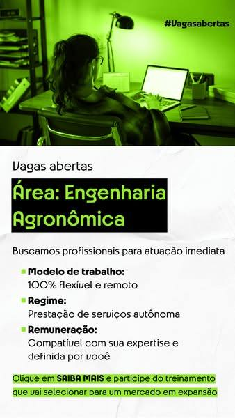

Biblioteca de Anúncios da Meta · 07/10/2026 14:27 · anúncios ativos há 7+ dias · 75 oferta(s) descartada(s) por não citarem concurso
347
Anúncios do nicho
132
Ofertas únicas
60
De foco direto
10
Tração forte
15/19
Tickets lidos no checkout
Como ler. Um anúncio antigo prova que o anunciante segue pagando por ele; não prova faturamento. A Meta não divulga gasto nem impressões. As etiquetas de tração, foco, tipo de produto, gancho e público são regras automáticas por palavras-chave, feitas para triagem. Só o ticket marcado "no checkout" é preço confirmado.
Padrões dos anúncios
Base: 347 anúncios de 96 anunciantes; 128 no ar há 45+ dias (veteranos). Anunciantes = quantos produtores distintos usam a categoria. Veteranos = quantos desses anúncios passaram de 45 dias e, entre parênteses, a fatia da categoria entre todos os veteranos. Se essa fatia é maior que a fatia em Anúncios, a categoria aparece mais entre os que duram. Com 1 ou 2 anunciantes é caso isolado. A coleta junta duas amostras por busca (7+ e 45+ dias), então o total de veteranos não é taxa de sobrevivência.
Formato do criativo
Vídeo, imagem única ou carrossel.
Categoria
Anunciantes
Anúncios
Mediana de dias
Veteranos
vídeo
57 (59%)
147 (42%)
50
78 (61%)
imagem
38 (40%)
153 (44%)
10
29 (23%)
carrossel
24 (25%)
47 (14%)
29
21 (16%)
Proporção do criativo
Vertical (4:5 ou 9:16), quadrada (1:1) ou horizontal.
Categoria
Anunciantes
Anúncios
Mediana de dias
Veteranos
vídeo vertical
54 (56%)
137 (39%)
48
70 (55%)
imagem vertical
31 (32%)
137 (39%)
10
21 (16%)
carrossel vertical
17 (18%)
36 (10%)
35
17 (13%)
imagem quadrada
9 (9%)
14 (4%)
48
8 (6%)
carrossel quadrada
8 (8%)
10 (3%)
25
4 (3%)
vídeo quadrada
3 (3%)
4 (1%)
67
3 (2%)
vídeo horizontal
2 (2%)
6 (2%)
705
5 (4%)
imagem horizontal
2 (2%)
2 (1%)
23
0 (0%)
carrossel horizontal
1 (1%)
1 (0%)
8
0 (0%)
Duração dos vídeos
Só anúncios em vídeo.
Categoria
Anunciantes
Anúncios
Mediana de dias
Veteranos
31s a 1min
29 (51%)
61 (41%)
51
35 (45%)
1 a 2min
25 (44%)
49 (33%)
29
21 (27%)
Mais de 2min
13 (23%)
21 (14%)
91
14 (18%)
Até 30s
8 (14%)
16 (11%)
53
8 (10%)
Botão (CTA)
Rótulo do botão exibido no anúncio.
Categoria
Anunciantes
Anúncios
Mediana de dias
Veteranos
sem botão
42 (44%)
108 (31%)
29
42 (33%)
Saiba mais
38 (40%)
146 (42%)
21
44 (34%)
Ver detalhes
17 (18%)
39 (11%)
48
23 (18%)
Enviar mensagem pelo WhatsApp
11 (11%)
18 (5%)
10
0 (0%)
Visitar perfil do Instagram
10 (10%)
19 (5%)
174
12 (9%)
Comprar agora
6 (6%)
12 (3%)
30
6 (5%)
Enviar mensagem
3 (3%)
3 (1%)
12
0 (0%)
Cadastre-se
1 (1%)
1 (0%)
13
0 (0%)
Inscreva-se
1 (1%)
1 (0%)
86
1 (1%)
Destino do clique
Para onde o anúncio leva.
Categoria
Anunciantes
Anúncios
Mediana de dias
Veteranos
Página própria (LP / site)
66 (69%)
257 (74%)
24
87 (68%)
Página / formulário no Facebook
33 (34%)
81 (23%)
29
36 (28%)
WhatsApp
5 (5%)
7 (2%)
57
4 (3%)
Perfil do Instagram
1 (1%)
1 (0%)
22
0 (0%)
Checkout direto
1 (1%)
1 (0%)
49
1 (1%)
Tamanho da copy
Texto principal do anúncio.
Categoria
Anunciantes
Anúncios
Mediana de dias
Veteranos
Média (200 a 600)
56 (58%)
175 (50%)
29
78 (61%)
Longa (mais de 600)
42 (44%)
113 (33%)
22
44 (34%)
Curta (até 200 caracteres)
13 (14%)
58 (17%)
10
6 (5%)
Sem texto
1 (1%)
1 (0%)
12
0 (0%)
Tipo de gancho (1ª linha da copy)
Classificação por palavras-chave; um gancho pode cair em mais de um tipo.
Categoria
Anunciantes
Anúncios
Mediana de dias
Veteranos
Exemplo
Outro
51 (53%)
144 (41%)
29
49 (38%)
🚨 PROCURA-SE PEDAGOGOS🚨 — Caminho da Perícia
Notícia de concurso / edital
23 (24%)
65 (19%)
10
21 (16%)
Se o edital do seu TRT saísse amanhã, você estaria pronto para fazer a prova? — MEQ Concursos
Pergunta
19 (20%)
38 (11%)
59
26 (20%)
Se o edital do seu TRT saísse amanhã, você estaria pronto para fazer a prova? — MEQ Concursos
Número / lista
14 (15%)
44 (13%)
10
10 (8%)
3 cenários de APROVAÇÃO ✅️ — Caderno do Aprovado - Materiais para Concursos
Dor / erro do candidato
13 (14%)
26 (7%)
17
11 (9%)
Se o edital do seu TRT saísse amanhã, você estaria pronto para fazer a prova? — MEQ Concursos
Prova social / autoridade
12 (12%)
22 (6%)
57
13 (10%)
TRT | Como estudar em alto nível e ser aprovado para o cargo de Técnico Judiciário? — Isaque Concursos
O concurseiro de alto nível não nasce no pós-edital. Ele se forma no pré-edital. — Tjteiros
Salário / estabilidade
10 (10%)
29 (8%)
10
6 (5%)
⚖️ Os próximos concursos de TRTs podem abrir excelentes oportunidades em diferentes regiões do país, com remunerações iniciais que podem chegar a cerca de R$ 16 — Concurseiro aos 40
Promessa de método
10 (10%)
22 (6%)
57
17 (13%)
TRT | Como estudar em alto nível e ser aprovado para o cargo de Técnico Judiciário? — Isaque Concursos
Contraintuitivo / inimigo comum
5 (5%)
8 (2%)
16
2 (2%)
Não é falta de dedicação. É falta de direção. — Supremo Concursos
Elementos da copy
Recursos presentes no texto; não são excludentes.
Categoria
Anunciantes
Anúncios
Mediana de dias
Veteranos
Usa emojis
60 (62%)
193 (56%)
29
83 (65%)
Lista com marcadores (✔, ✅, •)
23 (24%)
83 (24%)
29
34 (27%)
Hashtags
22 (23%)
44 (13%)
38
22 (17%)
Cita valor em R$
21 (22%)
60 (17%)
10
9 (7%)
Link ou 'link na bio' no texto
11 (11%)
18 (5%)
56
12 (9%)
Gancho em CAIXA ALTA
10 (10%)
35 (10%)
29
1 (1%)
Cita bônus
4 (4%)
11 (3%)
51
6 (5%)
Cita garantia
4 (4%)
4 (1%)
53
2 (2%)
Sinais de público (ICP) citados na copy
Quem o anúncio diz atender, por palavras-chave. Indica a quem o mercado fala, não quem compra.
Categoria
Anunciantes
Anúncios
Mediana de dias
Veteranos
Exemplo
Motivado por salário / estabilidade
27 (28%)
72 (21%)
11
17 (13%)
Se você quer chegar competitivo para ser aprovado e nomeado nas próximas provas de TRTs, a Imersão Aprova TRT pode ser um divisor de águas para conquistar a tão — Isaque Concursos
Esquece o que estuda / revisão
24 (25%)
54 (16%)
21
17 (13%)
📚 Quem quer disputar uma vaga de verdade precisa construir base, revisar com método, acompanhar o próprio desempenho e estudar com direção. — Concurseiro aos 40
Trabalha / tem pouco tempo
17 (18%)
107 (31%)
12
24 (19%)
Durante essa jornada de estudos, eu estudava de 2h a 3h por dia, já que estudava e trabalhava como CLT. — Isaque Concursos
Pré-edital / sair na frente
12 (12%)
25 (7%)
29
11 (9%)
O concurseiro de alto nível não nasce no pós-edital. Ele se forma no pré-edital. — Tjteiros
Dificuldade em discursiva / redação
9 (9%)
22 (6%)
12
5 (4%)
Não para estudar mais um pouco. Para sentar, encarar 60 questões seguidas, matérias misturadas, discursiva e o relógio correndo. — MEQ Concursos
Estuda há tempo e não passa
8 (8%)
17 (5%)
56
12 (9%)
Você estuda, se prepara, domina o conteúdo… mas ainda trava na hora da redação? 📝 — Professor Hansk
Começando do zero
7 (7%)
23 (7%)
29
11 (9%)
• Esteja começando os estudos agora; — Isaque Concursos
Nível médio
7 (7%)
20 (6%)
8
6 (5%)
Para você ter uma ideia, eu só me formei no ensino médio por meio do ENCCEJA, já que tinha repetido em todas as matérias. — Isaque Concursos
Reta final / pós-edital
7 (7%)
15 (4%)
29
5 (4%)
Com estratégia, planejamento e acompanhamento, você consegue construir uma base mais forte agora e evitar a correria do pós-edital. — Concurseiro aos 40
Nível superior / Direito
5 (5%)
5 (1%)
21
2 (2%)
Trata-se de uma oportunidade de nível superior com MUITAS vagas, e uma remuneração inicial muito atrativa. — Concursos Ceisc
Erra questões / pegadinhas da banca
4 (4%)
6 (2%)
25
2 (2%)
O que trava a maioria é achar que pra passar tem que saber a matéria inteira. Você abre o edital gigante, tenta decorar tudo e chega no dia da prova travado, po — Gustavo Nogueira - Aprovação Ágil
Mãe / família
3 (3%)
7 (2%)
57
6 (5%)
Se isso não fosse o bastante, eu tive uma infância/adolescência bem difícil. Sou filho de ex -empregada doméstica e, por isso, não tínhamos condições financeira — Isaque Concursos
Perdido no excesso de conteúdo
2 (2%)
5 (1%)
64
3 (2%)
O que trava a maioria é achar que pra passar tem que saber a matéria inteira. Você abre o edital gigante, tenta decorar tudo e chega no dia da prova travado, po — Gustavo Nogueira - Aprovação Ágil
Tipo de produto × ticket
Tipo identificado por palavras-chave na copy, no título do link e na headline; uma oferta pode ter vários. O ticket só entra quando foi lido no checkout.
Tipo de produto
Anunciantes
Ofertas
Veteranas
Com ticket lido
Mínimo
Mediana
Máximo
Tickets lidos
Material em PDF / apostila / caderno
46
52
27
4
R$ 497
R$ 547
R$ 1.489
Academia do Perito R$ 497; Caderno do Aprovado - Materiais para Concursos R$ 497; Caderno do Aprovado - Materiais para Concursos R$ 597; Discursiva na Prática R$ 1.489
Curso em videoaulas
23
34
20
4
R$ 597
R$ 1.158
R$ 6.346
Caderno do Aprovado - Materiais para Concursos R$ 597; Instituto INAPI R$ 827; Discursiva na Prática R$ 1.489; Ceisc Concursos R$ 6.346
Isca gratuita / grupo VIP
21
31
9
5
R$ 497
R$ 827
R$ 6.346
Isaque Concursos R$ 497; Caderno do Aprovado - Materiais para Concursos R$ 597; Instituto INAPI R$ 827; Jus Expert R$ 997; Ceisc Concursos R$ 6.346
Mentoria / acompanhamento
19
23
12
1
R$ 497
R$ 497
R$ 497
Isaque Concursos R$ 497
Questões / simulados
17
24
8
2
R$ 597
R$ 712
R$ 827
Caderno do Aprovado - Materiais para Concursos R$ 597; Instituto INAPI R$ 827
Não identificado
16
18
7
4
R$ 1.725
R$ 1.961
R$ 2.197
Escola Trabalhista R$ 1.725; prof.camilasabongi com Escola Trabalhista R$ 1.725; Escola Trabalhista R$ 2.197; prof.camilasabongi com Escola Trabalhista R$ 2.197
Cronograma / plano de estudos
14
19
7
1
R$ 497
R$ 497
R$ 497
Isaque Concursos R$ 497
Discursiva / redação
8
9
3
2
R$ 597
R$ 1.043
R$ 1.489
Caderno do Aprovado - Materiais para Concursos R$ 597; Discursiva na Prática R$ 1.489
Lei seca / legislação
8
9
5
2
R$ 497
R$ 498
R$ 500
Caderno do Aprovado - Materiais para Concursos R$ 497; minhajornadadeconcurseira com Decorando a Lei Seca Cursos Para Concursos E OAB R$ 500
Assinatura / clube / vitalício
4
4
2
3
R$ 500
R$ 598
R$ 1.489
minhajornadadeconcurseira com Decorando a Lei Seca Cursos Para Concursos E OAB R$ 500; Mapas da Lulu Concurseira com Laura Amorim R$ 598; Discursiva na Prática R$ 1.489
Mapas mentais / esquemas
4
4
2
2
R$ 497
R$ 547
R$ 598
Caderno do Aprovado - Materiais para Concursos R$ 497; Mapas da Lulu Concurseira com Laura Amorim R$ 598
Expressões repetidas entre anunciantes
Sequências de 2 ou 3 palavras usadas por 3 ou mais anunciantes (o número é a quantidade de anunciantes).
clique em saiba 19tecnico judiciario 12garanta sua vaga 11concurso publico 9edital sair 8analista judiciario 8agora mesmo 8remuneracao inicial 7realmente cai 7concursos publicos 7tribunal de contas 6sair para comecar 6quem quer 6pre edital 6novo concurso 6link da bio 6concurso do trt 6tribunal regional 5tribunal de justica 5toque em saiba 5tj sp 5pos edital 5pode sair 5nivel superior 5lei seca 5ensino medio 5direito do trabalho 5curso completo 5clique no link 51o lugar 5
Arquivo de ganchos
Primeira linha dos anúncios mais replicados e mais antigos. O link abre o anúncio na Biblioteca da Meta.
Foco direto22 diasTração médio · 29 anúncio(s), 2 com baixo volume
Formato: vídeo (4), imagem (7) · Botão: sem botão (11)
Copy do anúncio
⚖️ Os próximos concursos de TRTs podem abrir excelentes oportunidades em diferentes regiões do país, com remunerações iniciais que podem chegar a cerca de R$ 16 mil.
📍 Estados como MT, PA, RS e PR já estão no radar de quem busca uma carreira mais estável, valorizada e com alta remuneração na Justiça do Trabalho.
⏰ Mas esperar o edital sair para começar pode significar perder um tempo precioso de preparação.
📚 Quem quer disputar uma vaga de verdade precisa construir base, revisar com método, acompanhar o próprio desempenho e estudar com direção.
🏆 Foi assim que eu consegui ser aprovado em 3 TRTs, mesmo começando depois dos 40.
🎯 Se você quer se preparar de forma estratégica para os próximos concursos de TRTs e buscar uma carreira com remuneração inicial de até R$ 16.000, clique no link e fale comigo
Ganchos das variações
🔥 O TRT-MG já começou a se movimentar para um novo concurso em 2027.
⚖️ Os próximos concursos de TRTs podem abrir excelentes oportunidades em diferentes regiões do país, com remunerações iniciais que podem chegar a cerca de R$ 16 mil.
🔥 Começar depois dos 40 não significa estar atrasado.
Headline da página
Inicie o passo mais importante rumo à sua aprovação no Concurso do TRT
Foco direto923 diasTração forte · 20 anúncio(s)Material em PDF / apostila / cadernoCronograma / plano de estudos
Formato: carrossel (13), vídeo (4), imagem (3) · Botão: Visitar perfil do Instagram (8), sem botão (12)
Copy do anúncio
Talvez você já tenha escutado várias histórias assim:
“Demorei a passar, mas depois que veio a primeira aprovação, vieram várias... uma atrás da outra.”
Pois é, chega um momento em que a gente “aprende a estudar”. Você estabelece uma rotina, entende o que funciona para a sua realidade, encontra um método que consegue manter... e vai “pegando o jeito”. A partir daí, os resultados começam a aparecer.
E, nos concursos de Tribunais, temos ainda duas grandes vantagens:
👉 1. O núcleo de matérias é muito parecido entre os concursos.
Com algumas adaptações no ciclo/cronograma, você consegue fazer a prova de um Tribunal X, depois aproveitar boa parte da preparação para um Tribunal Y, e assim sucessivamente.
Eu nunca fui muito de conciliar vários concursos. Preferia aproveitar as oportunidades de forma sequencial: focava 100% em um e, depois da prova, aproveitava a bagagem construída e direcionava o foco para o próximo. E assim eu fui... aumentando minha maturidade nas disciplinas e ficando cada vez melhor nelas.
Mesmo que a aprovação não venha no primeiro concurso, essa bagagem não se perde. Pelo contrário: você já chega muito mais preparado que a maioria na próxima oportunidade.
Muita gente me pergunta o “segredo” para eu ter conseguido uma aprovação em 1º lugar e até gabaritar uma prova. Na prática, foi apenas a premiação por toda essa bagagem acumulada.
👉 2. As listas dos concursos de Tribunais costumam rodar bastante.
Muita gente que passa em boas posições também está fazendo outras provas e colocando o nome em outras listas.
A pessoa passa em um Tribunal e depois é chamada em outro mais perto de casa. Passa para Técnico e depois é chamada para Analista. Isso gera uma grande rotatividade.
Ex: dos 10 primeiros colocados no meu concurso do TRT-PI, a maioria já deixou o cargo por outro melhor ou mais perto de casa.
Por isso eu sempre reforço: coloque o seu nome na lista. E não precisa ser necessariamente no Top 10. A lista vai andando, pessoas vão saindo, novas vagas vão surgindo e, ao longo da validade do concurso, muita gente que já nem tinha esperança acaba sendo surpreendida com a convocação.
Faça a sua parte e deixe o tempo fazer a dele. =)
Ganchos das variações
Não sei se a ficha já caiu por aí, mas vocês serão servidores públicos do Poder Judiciário cearense. 😮🙏👏
Lançados em agosto de 2025
Lançados em fevereiro de 2025
3 cenários de APROVAÇÃO ✅️
O caderno de Português do 1º lugar no TRT-PI, com toda a teoria organizada de forma objetiva + questões comentadas das 3 principais bancas de concurso (FCC, FGV e Cespe/Cebraspe).
Lançados em outubro de 2024
Títulos do link
Beto (José Humberto) - Caderno Do Aprovado - TRT/TST/TJ/MP (@cadernoaprovado) • Instagram photos and videos
Beto - Caderno Do Aprovado - TRT, TST e TJ - José Humberto (@cadernoaprovado) • Instagram photos and videos
Foco direto8 diasTração médio · 20 anúncio(s), 1 com baixo volumeQuestões / simuladosDiscursiva / redaçãoIsca gratuita / grupo VIP
Formato: imagem (6) · Botão: sem botão (2), Saiba mais (4)
Copy do anúncio
<100
Se o edital do seu TRT saísse amanhã, você estaria pronto para fazer a prova?
Não para estudar mais um pouco. Para sentar, encarar 60 questões seguidas, matérias misturadas, discursiva e o relógio correndo.
É isso que o 2º Concurso Simulado MEQ vai te mostrar, antes que a prova de verdade chegue.
📝 Prova completa no padrão FCC� ⏱️ Tempo cronometrado, correção individual e ranking� 🎯 Para Analista Judiciário (Área Judiciária) e Técnico Judiciário (Área Administrativa)� 💸 100% gratuito
📅 Prova online em 10/10 | Inscrições até 08/10
Clique em "Saiba mais" e garanta sua vaga.
Ganchos das variações
Se o edital do seu TRT saísse amanhã, você estaria pronto para fazer a prova?
Foco direto61 diasTração médio · 15 anúncio(s)R$ 497,00 no checkout (onprofit)Isca gratuita / grupo VIP
Formato: vídeo (5) · Botão: sem botão (4), Saiba mais (1)
Copy do anúncio
TRT | Como estudar em alto nível e ser aprovado para o cargo de Técnico Judiciário?
Depois de ser aprovado 2x no TRT-PI, 1x no TRT-PR e 1x no TRT-RS, gravei uma Imersão para contar exatamente o que eu fiz para ser aprovado nesses TRTs.
Durante essa jornada de estudos, eu estudava de 2h a 3h por dia, já que estudava e trabalhava como CLT.
Não foi uma jornada nada fácil…
Principalmente porque eu não tive uma boa base escolar.
Para você ter uma ideia, eu só me formei no ensino médio por meio do ENCCEJA, já que tinha repetido em todas as matérias.
Se isso não fosse o bastante, eu tive uma infância/adolescência bem difícil. Sou filho de ex -empregada doméstica e, por isso, não tínhamos condições financeiras para pagar cursinhos pra mim.
E mesmo sem pagar cursinhos caros, desenvolvi um método de estudos extremamente eficiente que me fez passar em 4 provas de TRTs. Hoje, sou Técnico Judiciário de um TRT.
Estou ensinando esse mesmo método para diversos alunos e, com toda certeza, qualquer concurseiro pode começar aplicar hoje mesmo e alcançar os mesmos resultados que eu e meus alunos tivemos.
Se você quer chegar competitivo para ser aprovado e nomeado nas próximas provas de TRTs, a Imersão Aprova TRT pode ser um divisor de águas para conquistar a tão sonhada estabilidade financeira como servidor público.
Mesmo que você:
• Tenha pouco tempo para estudar;
• Esteja começando os estudos agora;
• Tenha mais de 40 anos;
• Ou seja um concurseiro experiente
E o melhor: ela é 100% gratuita e on-line. Você pode assistir agora mesmo, onde você estiver.
⚠️ Mas, atenção: essa Imersão pode sair do ar a qualquer momento, de verdade.
Não estou falando isso da boca para fora…
Se a Imersão não estiver fazendo sentido para as pessoas que estão assistindo, eu e minha equipe removeremos do ar. É por esse motivo que ela pode sair do ar a qualquer momento.
De verdade? É uma oportunidade em tanto, pois temos MILHARES de alunos que passaram por essa Imersão e, se eu fosse você, eu reservaria um tempo também para assisti-la.
Para isso, aperte em “saiba mais” para assistir à Imersão agora mesmo.
Te espero lá na outra página!
Bons estudos!
Títulos do link
Imersão Aprova TRT
Headline da página
Como estudar em alto nível para o cargo de Técnico Judiciário de qualquer TRT do Brasil e alcançar a aprovação, mesmo começando do zero e sem cursinho?
Foco direto9 diasTração médio · 11 anúncio(s)Questões / simuladosCronograma / plano de estudosIsca gratuita / grupo VIP
Formato: imagem (8), vídeo (3) · Botão: sem botão (8), Ver detalhes (3)
Preços exibidos na página (não confirmados)
R$ 9.776,71 · R$ 16.040,88
Copy do anúncio
O Tribunal Regional do Trabalho da 8ª Região (TRT 8), que abrange Pará e Amapá, avançou na preparação de um novo concurso público. A Fundação Carlos Chagas (FCC) já foi contratada como banca organizadora do certame.
A seleção deverá contemplar os cargos de Técnico e Analista Judiciário, em diversas especialidades. O número de vagas ainda não foi definido, mas o tribunal registra 102 cargos vagos, sendo 82 de Técnico Judiciário e 11 de Analista Judiciário. O cronograma está em ajuste entre o TRT 8 e a FCC, com expectativa de publicação do edital.
No grupo de estudos, você terá acesso a materiais gratuitos, orientações de estudo, resolução de questões e atualizações sobre cargos, edital, inscrições, provas e todas as etapas do concurso.
Clique em “Saiba Mais” e entre no grupo de WhatsApp para receber materiais gratuitos e acompanhar todas as novidades do concurso do TRT 8.
See Details
Headline da página
Seu próximo capítulo: TRT-8. Comece a escrever a sua aprovação.
Foco direto48 diasTração médio · 8 anúncio(s), 1 com baixo volumeCurso em videoaulasQuestões / simuladosCronograma / plano de estudosIsca gratuita / grupo VIP
Formato: imagem (4), vídeo (2) · Botão: Ver detalhes (5), sem botão (1)
Preços exibidos na página (não confirmados)
R$ 297,00 · R$ 0,00
Copy do anúncio
<100
"📚🆓 Curso Grátis TJ-SP 2026 - Escrevente Técnico Judiciário! 🆓📚
Prepare-se para o TJ-SP 2026 com nosso curso grátis! 🌟
✅ 24 Aulas abrangentes para dominar o conteúdo do TJ-SP 2026.
📅 Plano de Estudos projetado para apenas 1 hora por dia - encaixe nos seus horários.
👨🏫 Tutoria Especializada com Professores experientes para esclarecer todas as suas dúvidas.
📝 Questões atualizadas para você praticar e se preparar da melhor maneira.
Inscreva-se agora mesmo e comece sua jornada rumo ao sucesso no TJ-SP 2026! 🚀
Foco direto166 diasTração forte · 7 anúncio(s)Mentoria / acompanhamentoCurso em videoaulasMaterial em PDF / apostila / caderno
Formato: imagem (2), vídeo (3) · Botão: sem botão (5)
Copy do anúncio
TRT RS e o TRT PA-AP estão realizando a contratação da banca FCC para gerenciar o novo concurso de servidores.
Previsão de publicação de edital iminente para o TRT RS e o PA-AP 🥳
.
O objetivo dos TRTeiros é dominar as classificações nas cabeças.
.
Os materiais + mentoria dos TRTeiros ajudarão você a encurtar o caminho até a aprovação 📚📚
Venha estudar com o curso que mais cresceu na última onda de TRT no ano de 2025 e que sabe como te preparar para a aprovação entre os primeiros classificados nos concursos de TRT no ano de 2026🥇🥇🥇
.
O curso TRTeiros é uma grande comunidade 🧡📚🚀
Ganchos das variações
TRT RS e o TRT PA-AP estão realizando a contratação da banca FCC para gerenciar o novo concurso de servidores.
🚨Informações sobre o TRT/MG
🚨Informações sobre o TRT/BA
Transparência da UE
A metodologia do curso TRTeiros é o que está faltando na sua aprovação 🧡📚🚀
👀 CONCURSOS DE TRTs EM 2026!
Se você está de olho em um concurso de tribunal do trabalho, aqui vai uma informação importante: em 2026, vencem concursos importantes de vários TRTs, como TRT-PI, TRT-PR, TRT-RS e TRT-MT.
E o sinal de alerta já foi dado: o TRT-RS autorizou um novo concurso antes mesmo do atual expirar. Isso deixa claro que quem deixar para estudar só depois do edital vai sair atrás.
Nos últimos concursos de TRTs aprovamos centenas de alunos, incluindo o Roberto Frois, que conquistou o 1º lugar para Analista Judiciário do TRT MT, errando apenas uma questão na prova.
Se você quer estar entre os próximos aprovados, o melhor momento para começar é agora.
👉 Clique em SAIBA MAIS e receba todas as informações sobre a minha mentoria, que é completa e foi pensada exatamente para quem quer passar em concursos de TRTs.
Foco direto185 diasTração forte · 5 anúncio(s)Assinatura / clube / vitalícioMaterial em PDF / apostila / caderno
Formato: carrossel (3), imagem (2) · Botão: Visitar perfil do Instagram (3), sem botão (2)
Copy do anúncio
O art. 6º da Lei 14.133/2021 é, hoje, um dos dispositivos mais cobrados em concursos públicos. Só em provas da FGV e do CEBRASPE, já apareceu mais de 40 vezes.
Alguns exemplos recentes:
FGV 2025 – Juiz de Direito (TJ-MS)
CEBRASPE 2023 – Promotor de Justiça (MPE-AM)
CEBRASPE 2022 – Defensor Público (DPE-SE)
CEBRASPE 2022 – Técnico Processual (PGE-RJ)
CEBRASPE 2022 – Delegado de Polícia (PC-RO)
FGV 2022 – Analista Judiciário (TRT-16)
FGV 2022 – Analista Judiciário (TRT-13)
FGV 2022 – Técnico Judiciário (TJ-TO)
E não é algo recente: esse dispositivo já vem sendo explorado há anos — principalmente por FGV e CEBRASPE.
A leitura é simples: quem estuda os artigos mais cobrados, sai na frente.
E é exatamente isso que o VMQ entrega:
um direcionamento claro, baseado em provas, mostrando o que realmente importa na sua preparação.
Quer estudar com mais estratégia e foco no que mais cai?
Clica no link da bio e aproveita a promoção de Aniversário para entrar na Ilimitada 🚀
Ganchos das variações
O art. 319 do Código Penal caiu no concurso para Promotor do MP-GO!
O art. 30 do Código Penal é daqueles dispositivos curtos, mas que a banca adora explorar em prova objetiva.
⚠️ Uma palavra pode mudar completamente o gabarito da questão.
O art. 6º da Lei 14.133/2021 é, hoje, um dos dispositivos mais cobrados em concursos públicos. Só em provas da FGV e do CEBRASPE, já apareceu mais de 40 vezes.
Foco direto140 diasTração forte · 5 anúncio(s)Material em PDF / apostila / cadernoIsca gratuita / grupo VIP
Formato: imagem (1), carrossel (1), vídeo (3) · Botão: sem botão (4), Visitar perfil do Instagram (1)
Copy do anúncio
Concurso TRT 4/RS: o edital pode sair a qualquer momento.
Para quem espera o edital sair para começar, pode parecer cedo.
Para quem entende o ciclo dos TRTs, já é hora de estudar com estratégia.
Se o TRT 4 está no seu radar, este é o momento de organizar base, banca e revisão.
Você está de olho em Analista Judiciário ou Técnico Judiciário?
Salve este post para acompanhar a movimentação do edital TRT 4.
E não esqueça de se cadastrar no workshop gratuito: Os 5 Pilares do Estudo para TRT.
#ConcursoTRT4 #TRT4 #TRT2026 #EditalTRT4 #AnalistaJudiciario
Ganchos das variações
Concurso TRT 4/RS: o edital pode sair a qualquer momento.
Alguns TRTs estão entrando em uma fase decisiva. 👀
Tem tribunal com banca em definição, grupo de trabalho formado, concurso prorrogado e validade chegando ao fim. Não é promessa de edital imediato, mas é cenário para acompanhar de perto.
Foco direto61 diasTração médio · 5 anúncio(s)R$ 497,00 no checkout (onprofit)Mentoria / acompanhamentoCronograma / plano de estudos
Formato: vídeo (5) · Botão: Saiba mais (5)
Copy do anúncio
Tenha organização e direcionamento para
estudar em alto nível para qualquer TRT do
Brasil com essa plataforma 🔥
Depois sair do zero, ter apenas 2h por dia
para estudar e ser aprovado 2x no TRT-PI, 1x
no TRT-PR e 1x no TRT-RS...
Resolvi consolidar o mesmo método que usei em um só lugar.
Mas não apenas isso...
Eu e minha equipe juntamos todos os
materiais, bizus estratégicos, cronograma com
todas as metas e diversas outras ferramentas
em uma plataforma só.
Essa plataforma é o que chamamos de
Projeto TRT.
Além de tudo isso que falei, você ainda terá
mentorias em grupo comigo, painel estatístico
inteligente, cronograma adaptável para a sua
realidade e muito mais.
Sem precisar pagar cursinhos caros, é
exatamente isso que tá fazendo alunos serem
aprovados em diversos TRTs espalhados por
todo Brasil.
Essa é a plataforma ideal para você que não quer
brincar de estudar para os concursos do TRT.
Para você que não quer gastar dinheiro em vão com
cursinhos caros...
É para você que busca estudar em alto nível para ser
aprovado já na próxima prova de TRT que você for
fazer.
Mesmo que você:
• Tenha pouco tempo para estudar;
• Esteja começando os estudos agora;
• Tenha mais de 40 anos;
• Ou seja um concurseiro experiente
Para conhecer essa plataforma que está mudando
completamente o mercado de tribunais, aperte em
"saiba mais".
Na próxima página, te explico com todos os
detalhes. Te espero lá.
Ganchos das variações
Tenha tudo que você precisa para estudar em alto nível para qualquer TRT do Brasil com o Projeto TRT🔥
Tenha organização e direcionamento para
Títulos do link
TRT: Estude em Alto Nível
TRTs: Organização e Direcionamento
Headline da página
Tenha tudo que precisa para estudar em alto nível com organização e direcionamento para o cargo de Técnico Judiciário do TRT e alcance sua aprovação
Foco direto51 diasTração médio · 5 anúncio(s)R$ 827,00 no checkout (hotmart)Curso em videoaulasQuestões / simuladosIsca gratuita / grupo VIP
Formato: vídeo (4), imagem (1) · Botão: Saiba mais (4), Ver detalhes (1)
Copy do anúncio
O edital está cada vez mais próximo, e quem quer conquistar uma vaga no TRT/PI precisa começar com estratégia desde já.
No Pré TRT/PI – Preparação Total, você terá:
📚 Turmas para Técnico Judiciário e Analista Judiciário
👨🏫 Corpo docente especializado
🎯 10 semanas de preparação intensiva
💻 Opção presencial ou transmissão ao vivo
🎁 BÔNUS: acesso gratuito ao INAPI Questões até 30 de novembro
E tem mais: lote promocional de lançamento válido por apenas 72 horas! ⏰
Não espere o edital sair para começar. Saia na frente e estude com quem mais aprova no Piauí.
📅 Início: 14/09 📍 Garanta sua vaga agora, clique em "Saiba mais"
Títulos do link
[ ⭐️ 4.9/5.0 ] Avaliação
Headline da página
Quem se prepara cedo, sai na frente da concorrência!
O Acesso Total TRT/TST é uma formação completa pensada exatamente para quem vai disputar vagas de técnico judiciário e analista judiciário. Conteúdo organizado por trilhas, materiais atualizados e foco absoluto na jurisprudência e no estilo de prova dos Tribunais do Trabalho.
Estude com método profissional e chegue competitivo para o próximo edital.
Ganchos das variações
O Acesso Total TRT/TST foi criado para quem se prepara de forma estratégica para as provas da área trabalhista, especialmente para os cargos de analista judiciário e técnico judiciário.
O Acesso Total TRT/TST é uma formação completa pensada exatamente para quem vai disputar vagas de técnico judiciário e analista judiciário. Conteúdo organizado por trilhas, materiais atualizados e foco absoluto na jurisp
Foco direto75 diasTração médio · 4 anúncio(s)Curso em videoaulasMaterial em PDF / apostila / cadernoLei seca / legislação
Formato: vídeo (4) · Botão: Saiba mais (4)
Copy do anúncio
A maior leva de TRTs da última década está entrando na fila. 14 provas até o final de 2027 — uma atrás da outra.
Técnico entra em R$11.500 iniciais, topo passa de R$20 mil. Analista de Direito, R$18 mil iniciais. Jornada de 35 horas por semana, teletrabalho.
Só que enxurrada de edital não te salva se você começa pelo lado errado. 500 horas de videoaula e 15 mil páginas de PDF não dão tempo.
O caminho é virar a ordem: questão comentada, gabarito destrinchado, lei seca e súmula do TST. Foi assim que a Diana fechou entre as 10 primeiras na objetiva do TRT-SP na reta final.
Assiste o vídeo e clica no botão — a ordem completa pra chegar nessa enxurrada pronto.
Ganchos das variações
Qual o melhor concurso de tribunal pra você começar hoje?
A maior leva de TRTs da última década está entrando na fila. 14 provas até o final de 2027 — uma atrás da outra.
Qual concurso te bota mais rápido em R$11.500 iniciais com qualquer graduação — inclusive tecnólogo?
"Trabalho 8 horas e ainda tenho família. Sobram 2 horas por dia pra estudar. TRT com 2 horas dá?"
Foco direto14 diasTração médio · 4 anúncio(s), 1 com baixo volumeMentoria / acompanhamentoCurso em videoaulasMaterial em PDF / apostila / cadernoQuestões / simulados
Seu próximo passo pode começar agora!
Os concursos dos Tribunais Regionais do Trabalho estão entre as grandes oportunidades para quem busca estabilidade, boa remuneração e uma carreira no serviço público.
Prepare-se com um curso completo, focado nos conteúdos mais importantes para a sua aprovação no TRT Brasil.
📚 Aulas gravadas
🎯 Preparação estratégica
📝 Conteúdo direcionado para concurso
Não espere o edital sair para começar. Antecipe sua preparação!
👉 Comece agora e saia na frente.
WHATSAPP
🚨 Prepare-se para o TRT Brasil
Sobre o curso: 50 encontros, 10 mentorias de Direito do Trabalho e Processo do Trabalho via Zoom; 2 simulados; Grupo exclusivo da turma; Aulas de resoluções de questões ao vivo; Super Revisão.
Ganchos das variações
Língua Portuguesa e Redação com quem entende de aprovação para o concurso do TRT-4
<100
Seu próximo passo pode começar agora!
Títulos do link
Por menos de R$5,00 ao dia você aprende Língua Portuguesa para o concurso do TRT-4!
Foco direto8 diasTração médio · 4 anúncio(s)Curso em videoaulasQuestões / simuladosCronograma / plano de estudosIsca gratuita / grupo VIP
Formato: imagem (4) · Botão: Ver detalhes (4)
Preços exibidos na página (não confirmados)
R$ 297,00 · R$ 0,00
Copy do anúncio
"📚🆓 Curso Grátis TJ-SP 2026 - Escrevente Técnico Judiciário! 🆓📚
Prepare-se para o TJ-SP 2026 com nosso curso grátis! 🌟
✅ 24 Aulas abrangentes para dominar o conteúdo do TJ-SP 2026.
📅 Plano de Estudos projetado para apenas 1 hora por dia - encaixe nos seus horários.
👨🏫 Tutoria Especializada com Professores experientes para esclarecer todas as suas dúvidas.
📝 Questões atualizadas para você praticar e se preparar da melhor maneira.
Inscreva-se agora mesmo e comece sua jornada rumo ao sucesso no TJ-SP 2026! 🚀
O Acesso Total TRT/TST é uma formação completa pensada exatamente para quem vai disputar vagas de técnico judiciário e analista judiciário. Conteúdo organizado por trilhas, materiais atualizados e foco absoluto na jurisprudência e no estilo de prova dos Tribunais do Trabalho.
Estude com método profissional e chegue competitivo para o próximo edital.
Ganchos das variações
O Acesso Total TRT/TST foi criado para quem se prepara de forma estratégica para as provas da área trabalhista, especialmente para os cargos de analista judiciário e técnico judiciário.
O Acesso Total TRT/TST é uma formação completa pensada exatamente para quem vai disputar vagas de técnico judiciário e analista judiciário. Conteúdo organizado por trilhas, materiais atualizados e foco absoluto na jurisp
A sua oportunidade de atuar no estado do Rio Grande do Sul, pelo Tribunal Regional do Trabalho, está chegando!
O último concurso expira sua validade em outubro e, segundo o histórico do Tribunal, o próximo já deve ser anunciado em breve.
Este é o momento ideal para iniciar sua preparação, com um curso que conhece a fundo o órgão e suas exigências. Quem inicia antes do edital vai mais longe!
Entenda como se preparar antecipadamente.
Ganchos das variações
A sua oportunidade de atuar no estado do Rio Grande do Sul, pelo Tribunal Regional do Trabalho, está chegando!
O TRT-4 pode estar prestes a anunciar um novo concurso!
Se preparar para tribunais exige método.
Títulos do link
Garanta sua Vaga
Headline da página
TRT-4 Club | Analista Judiciário - Área Judiciária
Foco direto154 diasTração forte · 3 anúncio(s)Material em PDF / apostila / caderno
Formato: vídeo (2) · Botão: sem botão (1), Saiba mais (1)
Copy do anúncio
Alguns profissionais da área da saúde atuam em hospitais públicos sem ter ingressado por concurso.
Em determinadas situações, a Justiça do Trabalho pode reconhecer direitos como FGTS, adicional de insalubridade e diferenças salariais.
Quer entender melhor como isso funciona? Clique em “Saiba mais”.
Foco direto32 diasTração médio · 3 anúncio(s)Curso em videoaulasMaterial em PDF / apostila / cadernoCronograma / plano de estudos
Formato: imagem (1) · Botão: sem botão (1)
Preços exibidos na página (não confirmados)
R$ 1.197,00 · R$ 797,00 · 12x de R$ 79,70
Copy do anúncio
Não é falta de dedicação. É falta de direção.
A maioria dos concurseiros passa meses abrindo PDF, assistindo aula aleatória e repetindo o ciclo, sem saber se está no caminho certo para a aprovação.
O Supremo resolve exatamente isso: cronogramas estruturados, aulas na sequência certa e professores que já foram aprovados nas carreiras que você quer seguir.
Método muda resultado.
Aperte em Saiba Mais e começa do jeito certo.
Headline da página
Analista Judiciário e Oficial de Justiça TRT 3ª Região (Direito) 2026 / 2027 - Pré-Edital
[COMBO MP-PE] Técnico Ministerial - Área Administrativa (Nível: R$ 497,00
[COMBO MP-PE] Analista Ministerial - Área Jurídica (Nível: R$ 497,00
Copy do anúncio
Como se preparar em alto nível para os próximos concursos de TRT:
✅ Meus cadernos completos das 6 principais disciplinas para TRT (Português, Constitucional, Administrativo, Adm.Pública, Trabalho e Processo).
✅️ Guia de estudos com 100 metas para vencer o edital.
✅ Planilha de controle de revisões e questões.
✅ Videoaulas gratuitas de cada tema com os melhores professores.
✅ Módulo sobre prova discursiva, com meu resumo de redação, dicas de preparação e materiais extras.
✅ Todas as provas recentes de TRT organizadas e com correção em vídeo.
✅ Regimento interno grifado e destacado.
✅ Súmulas e OJs organizadas por assunto.
✅ E muito mais.
Clique em saiba mais para receber todas as informações e amostras.
Títulos do link
See Details
Headline da página
Combos TRT e TST – Caderno do Aprovado (v2 – longa – campeã) – Caderno do Aprovado – Materiais de estudos para concursos públicos
Muitos concursos de Tribunais são esperados para 2026.
Uma dessas oportunidades será do TRT-4 (RS), com previsão de 300 vagas destinadas às carreiras de Analista e Técnico.
Com o Ceisc, você já pode SAIR NA FRENTE da concorrência SEM PAGAR NADA.
O Projeto Nomeação TRT-4 está oficialmente aberto.
Toque no botão e garanta a sua vaga para receber conteúdos exclusivos do concurso iminente! 🚀
Material Gratuito
Ganchos das variações
Saia na frente em um dos concursos mais esperados do Sul do Brasil.
Muitos concursos de Tribunais são esperados para 2026.
A comissão organizadora do novo concurso do TRT-4 (RS) já foi formada.
Foco direto16 diasTração médio · 3 anúncio(s)Mentoria / acompanhamentoMaterial em PDF / apostila / cadernoQuestões / simulados
Formato: vídeo (2), carrossel (1) · Botão: sem botão (2), Visitar perfil do Instagram (1)
Copy do anúncio
Tem um detalhe do TRT do Rio Grande do Sul que diz mais do que qualquer previsão de edital.
Em julho de 2026 o tribunal contratou o Banco do Brasil para processar as taxas de inscrição do próximo concurso. A estimativa contratada foi de 50 mil pagamentos. No concurso anterior foram 35.894 inscritos. Ou seja, o próprio tribunal está se preparando para quase 40% a mais de gente na disputa.
E olha o tamanho da ironia: o concurso já foi autorizado, a comissão já está formada, a operadora da taxa já foi contratada, mas a banca ainda não foi divulgada oficialmente e não existe data para o edital (apesar de a expectativa ser para as próximas semanas).
É exatamente aí que mora a sua chance. Enquanto a data não vem, você tem tempo tranquilo para aprender de verdade. Quando o edital sair, esse tempo acaba para todo mundo ao mesmo tempo.
O plano certo é chegar no dia da publicação com o conteúdo já estudado. A partir dali o seu dia deixa de ser aprender matéria nova e passa a ser revisar e resolver o máximo de questões possível.
Se você quer disputar o TRT RS com um caminho pronto e acompanhamento de perto, digite EU QUERO aqui nos comentários que eu te explico como funciona a minha MENTORIA.
Ganchos das variações
Estudar sozinho não significa estudar sem direção.
Tem um detalhe do TRT do Rio Grande do Sul que diz mais do que qualquer previsão de edital.
Já tentou o TRT-RS 3 vezes e não passou? Será que ainda vale a pena tentar de novo?
Títulos do link
Fabiano Pereira | Concursos de Tribunais (@fabianopereiraprof) • Instagram photos and videos
Atravessei a faculdade de Direito decorando manual, virando noites, com a sensação de que estudar é sofrer. Quando comecei a pensar em TRT, achei que ia ser mais do mesmo.
Não é. A prova do TRT não premia quem sofreu mais nem quem leu mais — premia quem acerta mais questão no mesmo tempo. O erro número um de quem vem do Direito é ler a teoria inteira antes de encarar uma primeira questão. É a ordem que mais cansa e que menos rende.
Inverte: começa pela questão comentada, usa o gabarito pra enxergar o que a prova cobra, e só depois vai na lei seca. Concentra fogo, por exemplo, nos 3 temas que respondem por 73% das questões de Direito do Trabalho.
O raciocínio jurídico que a faculdade te deu joga a favor na ordem certa. Técnico entra em R$ 11.500, e a base serve pros 24 TRTs e pro TST.
Clica no botão e assiste a aula gratuita enquanto ela está no ar.
❌ Estudar tudo não te aprova em TRT.
✅ Estudar o núcleo certo, sim.
O edital muda nos detalhes.
O que decide a prova quase nunca muda.
📘 Baixe grátis o Raio-X Analista Judiciário TRTs
e estude com foco no que realmente cai em TRT e TST.
👉 Download gratuito.
O Concurso para Escrevente Técnico Judiciário do Tribunal de Justiça de São Paulo deve ter seu edital publicado em 2026.
Estude com um time professores especialistas em Concursos de Tribunais. No último concurso do TJ-RS 7 dos 10 primeiros colocados foram nossos alunos.
No Club do Ceisc você tem acesso a:
✅ Simulados com foco na banca Vunesp
✅ Resolução de questões ao vivo e gravadas
✅ Fórum de Português ao vivo
✅ Correção de redação
✅ E muito mais!
Matricule-se AGORA em 12x sem juros de R$ 119,75.
Ganchos das variações
O Concurso para Escrevente Técnico Judiciário do Tribunal de Justiça de São Paulo deve ter seu edital publicado em 2026.
Já pensou ser Escrevente Técnico Judiciário do TJ-SP, atuar no maior tribunal da América Latina e receber mais de R$ 6 mil/mês?
Foco direto86 diasTração médio · 2 anúncio(s)R$ 6.345,94 no checkout (sympla)Curso em videoaulasIsca gratuita / grupo VIP
Formato: imagem (2) · Botão: Ver detalhes (1), Inscreva-se (1)
Copy do anúncio
Seu objetivo é ser Oficial de Justiça ou Escrevente Técnico Judiciário do maior tribunal da América Latina?
Então comece estudar agora mesmo, porque os editais devem ser publicados pela banca Vunesp em breve.
Mas não basta estudar sem dedicação, esse concurso exigirá disciplina e foco no que realmente poderá ser cobrado na sua prova.
E para estudar com direcionamento desde o início, participe gratuitamente do Projeto Nomeação TJ-SP. Assista aulas quinzenais com professores especialistas em Concursos para Carreiras de Tribunais e materiais exclusivos para iniciar seus estudos.
Inscreva-se para dicas de estudo e conheça nosso método.
Ganchos das variações
Seu objetivo é ser Oficial de Justiça ou Escrevente Técnico Judiciário do maior tribunal da América Latina?
Muitos desejam ser Oficial de Justiça do maior tribunal da América Latina, mas apenas quem estuda com direcionamento, organização e foco na banca consegue essa mudança de vida.
Títulos do link
Estude Com Ceisc
Headline da página
Projeto Nomeação TJ-SP | Escrevente Técnico e Oficial de Justiça
Com reajuste de 8% o cargo no judiciário passa a ser mais valorizado. A partir de julho desse ano já entra em vigor,
E para chegar lá, você precisa da preparação que o Ceisc Club tem, confira:
✅ Garantia de atualização do curso na fase pós-edital
✅ Professores especialistas em concursos de Tribunais
✅ Simulados com gabarito comentado
✅ Mentorias ao vivo
✅ Aulas de resolução de questões
✅ Cronogramas de estudos e MUTO MAIS!
Matricule-se agora e e comece a sua preparação antes da concorrência.
Garanta sua Vaga
Ceisc Concursos
Ganchos das variações
Com reajuste de 8% o cargo no judiciário passa a ser mais valorizado. A partir de julho desse ano já entra em vigor,
Um reajuste de 8% já foi aprovado, e o Judiciário ficou ainda mais atrativo.
Headline da página
TRT-4 Club | Técnico Judiciário - Área Administrativa
Foco direto76 diasTração médio · 2 anúncio(s)Material em PDF / apostila / caderno
Formato: carrossel (2) · Botão: Comprar agora (2)
Copy do anúncio
Quer ser aprovado em um concurso de TRT?
Conheça os meus e-books desenvolvidos para ajudar você a estudar com mais organização, compreender os principais temas de Direito do Trabalho e Processo do Trabalho e revisar de forma estratégica.
São materiais objetivos, didáticos e direcionados para quem deseja melhorar o desempenho nas provas dos Tribunais Regionais do Trabalho.
Escolha o material ideal para a sua preparação e dê mais um passo em direção à aprovação.
Acesse: [www.brunoklippel.com.br](http://www.brunoklippel.com.br)
Foco direto64 diasTração médio · 2 anúncio(s)R$ 497,00 no checkout (hotmart)Material em PDF / apostila / cadernoMapas mentais / esquemasLei seca / legislação
Formato: imagem (1), carrossel (1) · Botão: Ver detalhes (1), sem botão (1)
Order bumps
[REDAÇÃO IMBATÍVEL] Guia de redação dissertativa-argumentativa para concursos: R$ 149,00
[COMBO MP-PE] Técnico Ministerial - Área Administrativa (Nível: R$ 497,00
[COMBO TRT BRASIL] Técnico Judiciário - Área Adm.: R$ 597,00
[COMBO TRT BRASIL] Analista Judiciário - Área Judiciária: R$ 647,00
Copy do anúncio
🚨 O edital do TRF-3 pode sair a qualquer momento!
Enquanto você não sabe por onde começar, quem já está estudando com direcionamento certo larga na frente.
Foi por isso que criei os Cadernos do Aprovado para TRF-3, TJ e MP:
👉 Método que me levou ao 1º lugar no TRT-PI, com 100% de acertos na prova.
✅ Todas as disciplinas do edital, com teoria direto ao ponto
✅ Legislação grifada e esquematizada, pronta pra revisão
✅ Guia de Estudos com plano de metas: o que estudar, em que ordem e quando revisar
✅ Atualizações automáticas quando o edital sair
🎯 Não espere o edital sair para começar. Quem se antecipa chega mais afiado na prova.
📲 Clique em "Saiba mais" e conheça o combo completo para TRF-3, TJ e MP.
---
Títulos do link
Combos TRF, TJ e MP – Caderno do Aprovado – Caderno do Aprovado – Materiais de estudos para concursos públicos
Combo TRF-3, TJ e MP
Headline da página
Combos TRF, TJ e MP – Caderno do Aprovado – Caderno do Aprovado – Materiais de estudos para concursos públicos
Termos de entregáveis na página
Caderno de erros, Cronograma, Discursiva / redação, PDF, Resumos, Videoaulas
Foco direto29 diasTração médio · 2 anúncio(s)Curso em videoaulasMaterial em PDF / apostila / cadernoQuestões / simuladosCronograma / plano de estudos
Formato: imagem (2) · Botão: Ver detalhes (2)
Copy do anúncio
Estude com o 1º lugar no TRT-22 🏆
São mais de 10.000 concurseiros estudando com o Caderno do Aprovado 📚
✅ Materiais de estudos para Tribunais:
• Meus cadernos de todas as disciplinas
• Cronograma flexível
• Metas de estudos
• Planilha de controle
• Links para videoaulas
• Links para questões
• Revisões programadas
• Estratégia de reta final
✅ Meu direcionamento em TODAS as matérias
✅ SUPORTE no Whatsapp
✅ ATUALIZAÇÕES no pós-edital
Clique em SAIBA MAIS e prepare-se em alto nível para os próximos concursos!
Títulos do link
Caderno do Aprovado – Materiais de estudos para concursos públicos
Headline da página
Caderno do Aprovado – Materiais de estudos para concursos públicos
Termos de entregáveis na página
Caderno de erros, Cronograma, PDF, Resumos, Videoaulas
Foco direto21 diasTração médio · 2 anúncio(s)Curso em videoaulasMaterial em PDF / apostila / cadernoCronograma / plano de estudos
Formato: imagem (1) · Botão: sem botão (1)
Preços exibidos na página (não confirmados)
R$ 1.997,00 · R$ 1.497,00 · 12x de R$ 149,70 · R$ 1.197,00 · 12x de R$ 119,70
Copy do anúncio
Não é falta de dedicação. É falta de direção.
A maioria dos concurseiros passa meses abrindo PDF, assistindo aula aleatória e repetindo o ciclo, sem saber se está no caminho certo para a aprovação.
O Supremo resolve exatamente isso: cronogramas estruturados, aulas na sequência certa e professores que já foram aprovados nas carreiras que você quer seguir.
Método muda resultado.
Aperte em Saiba Mais e começa do jeito certo.
Funciona — e melhor: não é sorte, é conta.
O que trava a maioria é achar que pra passar tem que saber a matéria inteira. Você abre o edital gigante, tenta decorar tudo e chega no dia da prova travado, porque nunca treinou como a banca cobra.
O truque do gabarito faz o contrário. Você pega a questão já comentada, abre o gabarito e faz a engenharia reversa da cabeça de quem elaborou: que pegadinha ele armou, que palavra muda tudo. A lei você lê depois, já entendendo pra que serve cada artigo.
E funciona pro TRT-8 pelo mesmo motivo que funciona nos outros tribunais: em Direito do Trabalho, 3 temas respondem por 73% das questões. Em vez de espalhar energia, você concentra fogo onde a prova cai. E a mesma preparação serve pros 24 TRTs e o TST — técnico entra em R$ 11.500.
Clica no botão e assiste a aula gratuita enquanto ela está no ar.
Foco direto8 diasTração médio · 2 anúncio(s)Material em PDF / apostila / caderno
Formato: carrossel (2) · Botão: Visitar perfil do Instagram (1), sem botão (1)
Copy do anúncio
O TJ-SP quase nunca avisa antes. Dessa vez, avisou. 👀
Em agosto, o próprio tribunal confirmou que estuda novos concursos de Escrevente Técnico Judiciário (2ª a 10ª RAJ) e de Oficial de Justiça (todo o estado). A Vunesp já tem contrato ativo até junho de 2027, e os cadastros atuais do interior vencem entre 11 e 24 de junho de 2027.
Resumindo: o edital ainda não saiu, mas a preparação precisa começar agora. Ensino médio, R$ 6.043,54 iniciais e 40h semanais.
Quer estudar exatamente o que a Vunesp cobra há 20 anos? Comenta TJ que eu te mando o link do Protocolo TJSP no direct. 📩
#concursotjsp #tjsp #escreventetjsp #escreventetecnicojudiciario #oficialdejustica #vunesp #concursopublico #concurseiro #concursos2026 #concursos2027 #ensinomedio #hugoconcursos
Ganchos das variações
O TJ-SP quase nunca avisa antes. Dessa vez, avisou. 👀
Concurso TJ SP de Escrevente pode sair em breve.
Títulos do link
Hugo de Freitas | Concurso Público (@hugoconcursos) • Instagram photos and videos
Foco direto923 diasTração médio · 1 anúncio(s)Material em PDF / apostila / caderno
Formato: carrossel (1) · Botão: Visitar perfil do Instagram (1)
Copy do anúncio
Quando eu comecei a estudar para Tribunais, ficar "nas cabeças" era algo inimaginável... 1º lugar, então? Era coisa de maluco, extraterrestre, etc.
Olhando para trás, sinto orgulho por ter abaixado a cabeça, não para se conformar e desistir, mas para lutar pelo meu espaço, pela minha vez.
Olhando para frente, sinto ainda mais orgulho por ver vocês alcançando lugares cada vez mais altos.
No TRT-21 foram vários alunos aprovados, e agora no TRT-11 simplesmente a primeiríssima lugar.
Não sei o que dizer... apenas sentir.
Por aqui sigo trabalhando na intenção de sempre melhorar a minha entrega. A única certeza é que não vamos parar por aqui. Vamos buscar mais... Bora junto?
#trt11 #tre #tse #concursotse #concursotre #concursotseunificado #tseunificado #treunificado #concursotribunais #tribunais #concursopublico #concursopúblico #concursos #concursospublicos #concursospúblicos #concursosdetribunais #trt #concursotrt #concursosdetrts #trt7 #trtce #concursotrtce #concursotrt7 #trt6 #trtpe #trt20 #trtsergipe #trt24 #trtms
CURSO COMPLETO DE DIREITO DO TRABALHO 2026 -: R$ 367,00
CLUBE DE QUESTÕES 2.0 - 12 MESES DE: R$ 897,00
Copy do anúncio
Conheça o método da Escola Trabalhista que vai te dar condições REAIS de ser aprovado como Analista Judiciário do TRT em 24 semanas de estudos, com qualidade e direcionamento! 🔥 Garanta sua vaga na Preparação Extensiva Analista TRT!
Headline da página
PREPARAÇÃO EXTENSIVA ANALISTA JUDICIÁRIO DO TRT - ÁREA JUDICIÁRIA
CURSO COMPLETO DE DIREITO DO TRABALHO 2026 -: R$ 367,00
CLUBE DE QUESTÕES 2.0 - 12 MESES DE: R$ 897,00
Copy do anúncio
Conheça o método da Escola Trabalhista que vai te dar condições REAIS de ser aprovado como Analista Judiciário do TRT em 24 semanas de estudos, com qualidade e direcionamento! 🔥 Garanta sua vaga na Preparação Extensiva Analista TRT!
Títulos do link
prof.camilasabongi
Headline da página
PREPARAÇÃO EXTENSIVA ANALISTA JUDICIÁRIO DO TRT - ÁREA JUDICIÁRIA
Um preparatório para diversos concursos de Tribunais Regionais do Trabalho? 🚨
Isso mesmo, otimize seus estudos e tenha um preparo para diversos editais de 2026. 🚀
O TRT Nacional Club oferece mentorias, simulados, conteúdos atualizados pós-editais e muito mais.
Dê o próximo passo rumo ao cargo de Analista Judiciário clicando abaixo!
Equipe de Especialistas
Ceisc
See Details
Headline da página
TRT Nacional Club | Analista Judiciário - Área Judiciária
Termos de entregáveis na página
Caderno de erros, Cronograma, Discursiva / redação, Mentoria, Simulados, Videoaulas
Foco direto159 diasTração médio · 1 anúncio(s)Material em PDF / apostila / caderno
Formato: carrossel (1) · Botão: Visitar perfil do Instagram (1)
Copy do anúncio
Lançados em maio de 2026
🛑 Você ainda tá esperando o edital sair pra começar?
Esses TRTs seguem com validade ativa — Mas quem só começar depois… já vai chegar atrasado. ⏳
O pré-edital é o momento mais estratégico da preparação.
É agora que se constrói o resultado que aparece lá na frente.
📚💡
👉 Quer se organizar com eficiência pra aproveitar essas oportunidades?
Comenta TRT aqui ⬇️ que eu vou te ajudar com um direcionamento personalizado.
#concursos #concursospublicos #concurseiro #estudaqueavidamuda #provas #trt
Foco direto126 diasTração médio · 1 anúncio(s)Material em PDF / apostila / caderno
Formato: vídeo (1) · Botão: Ver detalhes (1)
Copy do anúncio
⚖️Fichar é pensar o Direito com estratégia
📍No Direito Material e Processual do Trabalho, o fichamento não é apenas um resumo, é uma forma inteligente de compreender, conectar e aplicar os institutos jurídicos no dia a dia, seja na prática profissional ou na preparação para provas.
📖 “O estudo sistematizado transforma a leitura em compreensão e a compreensão em aplicação segura do Direito.”
🎯 Quem organiza o estudo, ganha clareza.
⚖️ Quem ganha clareza, atua com mais segurança jurídica.
✍️ Autores:
Hector Cavalcanti Chamberlain — Procurador do Estado de Alagoas. Mestre em Processo Civil pela UFES.
Ana Karenina Cavalcanti Chamberlain — Oficial de Justiça do TRT da 2ª Região. Especialista em Direito Material e Processual do Trabalho.
👉 Clique em "Saiba mais" e garanta seu exemplar
Headline da página
Fichamento de Direito Material e Processual do Trabalho
Foco direto47 diasTração médio · 1 anúncio(s)Curso em videoaulas
Formato: vídeo (1) · Botão: Saiba mais (1)
Preços exibidos na página (não confirmados)
R$ 1.773,33 · 12x de R$ 39,90 · R$ 478,80 · R$ 2.217,78 · 12x de R$ 42,90
Copy do anúncio
www.focusconcursos.com.br @focusconcursos cupom:nomaderachel descontos, bora estudar, passar no concurso, trabalhar, aposentar bem e curtir a melhor fase da vida: A aposentadoria♥️#nomaderachel #focusconcursos #concursopúblico ##cursopreparatorioparaconcursos
Foco direto42 diasTração médio · 1 anúncio(s)Cronograma / plano de estudosIsca gratuita / grupo VIP
Formato: carrossel (1) · Botão: Saiba mais (1)
Copy do anúncio
Testar a Amostra do Pré-Edital TRT's não é só "dar uma olhada".
Você entra e recebe 7 dias de acesso às duas primeiras semanas do cronograma oficial, com PDMEQ, VadeMEQ e MEQ Cards, a mesma estrutura de quem já é aluno matriculado.
Cronograma pronto, material organizado, e você sentindo na prática se o método funciona pra você antes de decidir qualquer coisa.
Testa grátis por 7 dias, sem custo e sem compromisso.
Toque em saiba mais e confira!
Headline da página
Comece a estudar de graça com o pré‑edital TRTs 2026
Foco direto42 diasTração médio · 1 anúncio(s)Curso em videoaulasMaterial em PDF / apostila / cadernoLei seca / legislação
Formato: vídeo (1) · Botão: Saiba mais (1)
Copy do anúncio
Qual o melhor concurso de tribunal pra você começar hoje?
TRT. Técnico entra em R$11.500 iniciais, jornada de 35 horas por semana, teletrabalho na maioria dos tribunais. Contando os 24 TRTs mais o TST, são 25 chances na mesma matéria.
Só que essa fila não se atravessa com 500 horas de videoaula e apostilão de 15 mil páginas. A prova é objetiva — o jogo é acertar a questão.
A ordem que resolve: questão comentada, gabarito destrinchado, lei seca e súmula do TST.
Clica no botão que eu te mostro como acertar mais questão em menos tempo, de graça.
Foco direto37 diasTração médio · 1 anúncio(s)Mentoria / acompanhamentoCronograma / plano de estudos
Formato: imagem (1) · Botão: Ver detalhes (1)
Preços exibidos na página (não confirmados)
R$ 409,00 · R$ 257,67
Copy do anúncio
Todo médico que atende homens adultos conhece as armadilhas do consultório: pedir só testosterona total e perder o diagnóstico, confundir libido com ereção, não reconhecer a síndrome MOSH no paciente obeso, subestimar o efeito de ISRS, betabloqueadores, opioides e espironolactona sobre o desejo sexual, ou ficar sem rumo diante do usuário de anabolizantes em "blast and cruise". Some-se a isso a insegurança com fitoterápicos, a dose errada de anastrozol que provoca hipoestrogenismo iatrogênico e o monitoramento frouxo da TRT — e o resultado é o paciente migrando para coaches de academia e protocolos de internet.
"Libido masculina — da fisiologia à prescrição" foi escrito para resolver essas dores. Em 14 capítulos divididos em cinco partes — Fundamentos, Etiologia, Tratamento Não Hormonal, Tratamento Hormonal e Populações Especiais — o livro entrega fluxogramas diagnósticos, painéis laboratoriais mínimos, fórmulas fitoterápicas combinadas com doses fechadas, protocolos detalhados de TRT (cipionato, Durateston, Nebido, gel e pellets) com cronograma de monitoramento, e protocolos completos de terapia pós-ciclo com clomifeno e hCG. Cada capítulo traz casos clínicos, regras de ouro, pegadinhas e alertas que transformam conhecimento em decisão imediata.
Destinado a médicos, é a referência prática para quem entendeu que a queixa sexual masculina não é detalhe — é frequentemente o primeiro sinal de doenças metabólicas, psiquiátricas e cardiovasculares que merecem método. Da fisiologia à prescrição. Da queixa à conduta.
Foco direto29 diasTração médio · 1 anúncio(s)Curso em videoaulasMaterial em PDF / apostila / cadernoQuestões / simuladosDiscursiva / redaçãoCronograma / plano de estudos
Formato: imagem (1) · Botão: Ver detalhes (1)
Copy do anúncio
Estude com com o 1º lugar no TRT-22 🏆
São mais de 10.000 concurseiros estudando com o Caderno do Aprovado 📚
✅ Materiais de estudos para TRT:
• Meus cadernos das principais matérias
• Cronograma flexível
• Metas de estudos
• Planilha de controle
• Links para videoaulas
• Links para questões
• Revisões programadas
• Atualizações pós-edital
• Manual de redação
• Estratégia de reta final
• Jurisprudência organizada
✅ Meu direcionamento em TODAS as matérias
✅ Diversos BÔNUS
✅ SUPORTE no Whatsapp
✅ ATUALIZAÇÕES no pós-edital
Clique em SAIBA MAIS e prepare-se em alto nível para os próximos concursos!
clique em SAIBA MAIS e comece agora mesmo! ✅️
Foco direto27 diasTração médio · 1 anúncio(s)Material em PDF / apostila / cadernoMapas mentais / esquemasIsca gratuita / grupo VIP
Formato: carrossel (1) · Botão: Saiba mais (1)
Copy do anúncio
Prepare-se antes de todo mundo para o Concurso do TRT!
Chegou o Super Resumo Pré-Edital TRT, feito para quem quer começar os estudos antes da publicação do edital — com base no conteúdo completo do último concurso (TRT 2ª Região).
Com nossos resumos diretos ao ponto, você economiza tempo, foca no que realmente cai e ganha vantagem sobre a concorrência.
- Conteúdo 100% focado em TI
- Resumos, esquemas, tabelas e mapas mentais
- Feito por aprovados em concursos da área
- Baixe agora a amostra GRÁTIS e conheça o material que vai te deixar pronto pro edital!
#ConcursoTRT #TI #SuperResumos #PratiqueConcursos #ConcursoPublico #CarreiraTI #EstudoInteligente #ResumoPreEdital
Títulos do link
Super Resumos para Concurso TRT
Headline da página
Aumente suas chances de aprovação nos concursos de TI
O Tribunal Regional do Trabalho de Minas Gerais (TRT/MG) está com novo concurso público confirmado, com previsão de mais de 450 vagas. As oportunidades serão destinadas a candidatos de nível superior, com salários acima de R$ 10 mil.
O concurso segue em fase de preparação, e novas informações sobre cargos, banca, inscrições e demais etapas serão divulgadas com o avanço do certame.
No grupo de estudos, você terá acesso a materiais gratuitos, orientações de estudo, resolução de questões e atualizações sobre edital, cargos, inscrições, provas e todas as etapas do concurso.
Clique em “Saiba Mais” e entre no grupo de WhatsApp para receber materiais gratuitos e acompanhar todas as novidades do concurso do TRT/MG.
See Details
Headline da página
Seu próximo capítulo: TRT-MG. Comece a escrever a sua aprovação.
Formato: imagem (1) · Botão: Enviar mensagem pelo WhatsApp (1)
Copy do anúncio
Trabalhar no setor administrativo de um hospital não coloca ninguém a salvo dos riscos biológicos. E a Justiça do Trabalho acaba de reconhecer isso.
Em atuação conduzida pelos advogados Dr. Paulo Vinicius Guimarães e Dr. Marcos Raimundo da Silva, do escritório Guimarães e Silva (@guima_e_silva - https://guimasilvadvogados.com.br/), a Justiça do Trabalho de Ribeirão Preto (TRT da 15ª Região) condenou um hospital a pagar adicional de insalubridade de 20% a uma trabalhadora administrativa. A perícia confirmou que o direito depende da exposição ao ambiente de risco, independentemente do cargo.
⚖️ O que o hospital foi condenado a pagar:
✅ Adicional de insalubridade de 20% por todo o contrato
✅ Reflexos em férias + 1/3, 13º salários, aviso prévio indenizado e FGTS + multa de 40%
✅ R$ 4.000,00 de honorários periciais
✅ Indenização de 20% equivalente aos honorários advocatícios, valor que vai integralmente para a trabalhadora
✅ Honorários sucumbenciais de 15% aos advogados da parte
O direito nasce do ambiente e da exposição ao risco, não do cargo na carteira. Quem atua na recepção, faturamento, arquivo ou portaria de unidades de saúde sem a proteção adequada pode estar perdendo 20% do salário todos os meses, sendo essencial contar com análise técnica especializada.
#DireitoDoTrabalho #Insalubridade #DireitosTrabalhistas #Hospital #JustiçaDoTrabalho AgentesBiológicos Advocacia
WHATSAPP
api.whatsapp.com
Headline da página
Defesa firme dos seus direitos — com a experiência de quem já atuou em mais de 25 mil processos .
🩺 **EXCLUSIVO PARA MÉDICOS**
🔥 **Pós-Graduação em Medicina Hormonal Presencial**
Com **Glaycon Michels**, desenvolva um raciocínio clínico estruturado para conduzir os principais casos da medicina hormonal, de **TRT à saúde hormonal feminina**.
Você vai dominar:
✔️ Fisiologia endócrina e eixo HHG
✔️ Esteroidogênese, metabolismo e farmacocinética
✔️ Avaliação clínica, laboratorial e por imagem
✔️ Hipogonadismo masculino e TRT
✔️ Saúde hormonal feminina
✔️ Manejo clínico dentro dos limites éticos do CFM e da SBEM
🎓 **360 horas de formação**
📍 **Presencial — São Paulo/SP**
📅 **Início: 14 de novembro**
⏱️ **12 meses de duração**
👨⚕️ **Mentorias quinzenais + ambulatórios presenciais**
🏅 **Diploma reconhecido pelo MEC**
⚠️ **Vagas limitadas para acompanhamento próximo e prática em ambulatório.**
👉 **Garanta sua matrícula na Pós-Graduação em Medicina Hormonal.**
Títulos do link
Pós-Graduação em Medicina Hormonal Aplicada à Prática Clínica – Plenitude Educação
Headline da página
Pós-Graduação em Medicina Hormonal Presencial com Glaycon Michels
Conheça o curso que vai te aprovar no TRT-4 por menos de 5,00 ao dia!
São 50 encontros, mentorias com especialistas e Vade Mecum incluso na modalidade presencial e muito mais!
Para passar, tem que ser Verbo!
Títulos do link
Curso preparatório para o concurso do TRT-4 por menos de R$5,00 ao dia!
Foco direto13 diasTração médio · 1 anúncio(s)Material em PDF / apostila / caderno
Formato: vídeo (1) · Botão: Enviar mensagem pelo WhatsApp (1)
Copy do anúncio
🏙️ Apartamento de 103 m² no Setor Bueno, com 3 suítes plenas, andar alto e excelente custo-benefício para a região.
📍 Matiz Bueno | Próximo ao TRT | Setor Bueno
▪️ 103 m² privativos
▪️ 3 suítes plenas
▪️ Varanda gourmet ampla com churrasqueira a gás
▪️ Apartamento nascente
▪️ Andar alto
▪️ 2 vagas paralelas
▪️ Lazer completo
▪️ Possibilidade de venda mobiliado
💰 R$ 930.000
✨ Uma planta que aproveita muito bem os espaços, com ambientes amplos para viver e receber com conforto.
📲 Entre em contato e agende sua visita.
um novo padrão de alto padrão para os negócios na Praia da Avenida, Maceió.
Salas comerciais flexíveis de 41m² a 111m², em um empreendimento beira-mar exclusivo, com vista mar em 80% das unidades e esquadrias do piso ao teto.
✅ Boulevard comercial com vista mar
✅ Rooftop exclusivo com restaurante panorâmico e heliponto
✅ Auditório/Espaço Multiuso com vista panorâmica
✅ Espaço Zen para o seu bem-estar
✅ Arquitetura com fachada verde e design contemporâneo
✅ 2 a 4 vagas de garagem
✅ 9 andares | 270 unidades
✅ Obra a preço de custo
✅ A 8 min da Ponta Verde e 10 min da Barra Nova
Localização estratégica, próxima ao novo centro administrativo, hospitais, TRT, Fórum e cartórios.
Desenvolvido pela Markup Incorporações.
📲 Quer saber mais? Fale com a nossa equipe e garanta sua sala no endereço mais sofisticado de Maceió!
Clique e receba mais informações
Ser aprovado no concurso do TRT exige mais do que força de vontade.
Exige clareza e método.
Com a Mentoria Tribunal em Foco, você se prepara para os cargos de Analista e Técnico Judiciário sabendo exatamente:
✔ o que estudar
✔ quando revisar
✔ como passar
Com a MTF, você não estuda no escuro.
👉 Envie MUDANÇA no direct e conheça o método que pode te levar à aprovação em 2026.
Foco direto8 diasTração médio · 1 anúncio(s)Material em PDF / apostila / caderno
Formato: carrossel (1) · Botão: Visitar perfil do Instagram (1)
Copy do anúncio
Os TRTs estão se mexendo e tem muita gente que só vai perceber quando o edital sair.
Arrasta pro lado que eu te conto o que aconteceu essa semana em quatro tribunais diferentes.
E fica o recado: quem começa agora chega no edital com vantagem. Não é sobre estudar mais, é sobre estudar o que realmente cai.
💬 Comenta TRT que eu te mando o link do Protocolo no direct.
📌 Salva pra não perder e manda pra quem também sonha com tribunal.
#concursotrt #trt #trtrs #trt4 #trt8 #trtmg #trt3 #trtgo #trt18 #concursopublico #concursos #concurseiro #concurseira #tecnicojudiciario #analistajudiciario #tribunais #concursostribunais #fcc #estudarparaconcurso #vidadeconcurseiro #aprovacao #servidorpublico #ploa2027
Títulos do link
Mateus Alves (@malditafcc) • Instagram photos and videos
Formato: imagem (1) · Botão: Enviar mensagem pelo WhatsApp (1)
Copy do anúncio
🚨 OPORTUNIDADE IMPERDÍVEL! 🚨
🏭 VENDA JUDICIAL – IMÓVEL INDUSTRIAL EM SÃO MANUEL/SP
📍 Distrito de Aparecida de São Manuel – Município e Comarca de São Manuel/SP
💰 LANCE INICIAL: R$ 2.500.000,00
✔ Possibilidade de parcelamento
✅ Área do terreno: 7.571,16 m²
✅ Área construída aproximada: 2.300 m²
✅ Galpão em alvenaria com aproximadamente 3.500 m²
📄 Matrícula nº 7.727
📌 Localização estratégica:
• Município com infraestrutura completa;
• Próximo a supermercados, bancos, universidades e amplo comércio;
• Fácil acesso às principais vias da região;
• Excelente logística para atividades industriais, comerciais e de armazenamento.
💼 Excelente oportunidade para investidores, empresas, indústrias ou para expansão de operações.
⏳ Não perca a oportunidade de adquirir um imóvel de grande porte, em localização estratégica e com excelente potencial de valorização por meio de venda judicial.
📄 Consulte o edital para mais informações.
📲 WhatsApp: (19) 99919-2010
🔗 https://wa.me/5519999192010
🌐 https://benitosolucoesjudiciais.com.br/
📌 Corretor Judicial habilitado junto ao TRT-15
📑 CRECI/SP nº 78.903-F
Apareceram nas buscas e são de concurso, mas não citam os termos do foco.

vídeo (3), imagem (4)
Oferta #061 · lp.vagasjustica.com.br
Caminho da Perícia
29 diasTração médio · 28 anúncio(s)Isca gratuita / grupo VIP
Formato: vídeo (3), imagem (4) · Botão: sem botão (3), Saiba mais (4)
Copy do anúncio
🚨 PROCURA-SE ENGENHEIROS AGRÔNOMOS🚨
👉 Se você deseja trabalhar para a Justiça sem prestar concurso público, ter renda extra de casa e atuar com laudos dentro da sua área de formação,
essa é a sua grande oportunidade!
✅ Participe do AULÃO ON-LINE e GRATUITO, HOJE, às 20h, e descubra como ingressar nessa área e conquistar sua independência profissional.
Clique em "SAIBA MAIS" e garanta sua vaga!
29 diasTração médio · 24 anúncio(s)Isca gratuita / grupo VIP
Formato: imagem (4), vídeo (2) · Botão: Saiba mais (4), sem botão (2)
Copy do anúncio
🚨 PROCURA-SE VETERINÁRIOS🚨
👉 Se você deseja trabalhar para a Justiça sem prestar concurso público, ter renda extra de casa e atuar com laudos dentro da sua área de formação,
essa é a sua grande oportunidade!
✅ Participe do AULÃO ON-LINE e GRATUITO, HOJE, às 20h, e descubra como ingressar nessa área e conquistar sua independência profissional.
Clique em "SAIBA MAIS" e garanta sua vaga!
29 diasTração médio · 20 anúncio(s)Isca gratuita / grupo VIP
Formato: vídeo (2), imagem (3) · Botão: Saiba mais (5)
Copy do anúncio
🚨 PROCURA-SE ENGENHEIROS CIVIS🚨
👉 Se você deseja trabalhar para a Justiça sem prestar concurso público, ter renda extra de casa e atuar com laudos dentro da sua área de formação,
essa é a sua grande oportunidade!
✅ Participe do AULÃO ON-LINE e GRATUITO, HOJE, às 20h, e descubra como ingressar nessa área e conquistar sua independência profissional.
Clique em "SAIBA MAIS" e garanta sua vaga!
891 diasTração forte · 16 anúncio(s)Mentoria / acompanhamentoCurso em videoaulasMaterial em PDF / apostila / cadernoMapas mentais / esquemasQuestões / simuladosLei seca / legislaçãoCronograma / plano de estudos
Formato: vídeo (6) · Botão: sem botão (6)
Preços exibidos na página (não confirmados)
12x de R$ 38,62 · R$ 397,00
Copy do anúncio
Curso Completo com Mentoria e Aulas Diários para o Concurso da EBSERH
✅ Curso Completo das Básicas e Específicas
✅ Plano de Estudos Diário
✅ Aula de 100% dos Tópicos do Edital
✅ Mentorias Diárias com os Professores
✅ Simulados com Resultado e Avaliação Individual de Desempenho
✅ Mapas Mentais e Resumos Prontos
✅ 1.800 Questões Comentadas em Vídeo
✅ Acompanhamento com Tutor e Relatório de Desempenho
✅ Resolução Semanal de Provas Anteriores de Português, SUS, Legislação da EBSERH, Raciocínio Lógico e Específicas
Headline da página
Curso Completo de Enfermagem para Concursos - Prepara Enfermagem
29 diasTração médio · 12 anúncio(s)Isca gratuita / grupo VIP
Formato: imagem (1), vídeo (2) · Botão: Saiba mais (3)
Copy do anúncio
🚨 PROCURA-SE PEDAGOGOS🚨
👉 Se você deseja trabalhar para a Justiça sem prestar concurso público, ter renda extra de casa e atuar com laudos dentro da sua área de formação,
essa é a sua grande oportunidade!
✅ Participe do AULÃO ON-LINE e GRATUITO, HOJE, às 20h, e descubra como ingressar nessa área e conquistar sua independência profissional.
Clique em "SAIBA MAIS" e garanta sua vaga!
29 diasTração médio · 12 anúncio(s)Isca gratuita / grupo VIP
Formato: imagem (2), vídeo (1) · Botão: Saiba mais (3)
Copy do anúncio
🚨 PROCURA-SE ADVOGADOS! 🚨
👉 Se você deseja trabalhar para a Justiça sem prestar concurso público, ter renda extra de casa e atuar com laudos dentro da sua área de formação,
essa é a sua grande oportunidade!
✅ Participe do AULÃO ON-LINE e GRATUITO, HOJE, às 20h, e descubra como ingressar nessa área e conquistar sua independência profissional.
Clique em "SAIBA MAIS" e garanta sua vaga!
8 diasTração médio · 10 anúncio(s), 5 com baixo volume
Formato: imagem (10) · Botão: Saiba mais (10)
Preços exibidos na página (não confirmados)
R$ 24 · R$ 200 · R$ 147 · R$ 747 · R$ 247
Copy do anúncio
<100
Recentemente, foi publicado o novo edital do concurso público de Técnico de Controle Externo na Especialidade de Tecnologia da Informação do Tribunal de Contas do Estado de Goias (TCE GO) com 13 vagas e salário inicial de R$ 11.862.
Observação: o requisito de formação é nível médio, ou seja, qualquer pessoa com ensino médio concluído pode participar.
A prova vai ocorrer no dia 17/01/2027 e cada dia de preparação faz a diferença.
Para te ajudar a se preparar em alto nível preparamos um Super Intensivo 100% focado no cargo de TI do edital, feito por quem foi aprovado em concursos de TI.
O Super Intensivo TCE GO tem a estrutura completa para você aumentar as chances de aprovação no concurso do TCE GO.
Clique em saiba mais e aproveite a promoção para fazer sua matrícula hoje mesmo.
Ganchos das variações
<100
Recentemente, foi publicado o novo edital do concurso público de Técnico de Controle Externo na Especialidade de Tecnologia da Informação do Tribunal de Contas do Estado de Goias (TCE GO) com 13 vagas e salário inicial d
Headline da página
Aumente suas chances de aprovação no concurso de TI do TCE GO
8 diasTração fraco · 6 anúncio(s), 2 com baixo volumeDiscursiva / redaçãoIsca gratuita / grupo VIP
Formato: vídeo (2) · Botão: sem botão (2)
Copy do anúncio
Você estuda, se prepara, domina o conteúdo… mas ainda trava na hora da redação? 📝
Nos dias 13 e 14 de outubro, às 20h, eu vou te mostrar uma estrutura prática e replicável para construir uma redação competitiva em provas de concurso.
No Redação Salva Aprovação, você vai aprender a organizar suas ideias, construir argumentos, entender o que as bancas esperam e acompanhar a construção de uma redação completa na prática.
🎯 Evento 100% gratuito e online.
👉 Clique em Saiba Mais e faça sua inscrição gratuita.
Muita gente estuda há anos e continua sem passar. Quase nunca é falta de esforço. É falta de direção.
Na Mentoria Lumia, o Prof. Matheus Santos monta um plano individual para cada caso: foco no seu concurso, o que estudar em cada semana e, principalmente, o que cortar.
Mais de 100 aprovações em concursos de Tribunais, Polícias e federais.
As vagas são limitadas e a entrada é por aplicação.
HTTPS://SERAPROVADO.COM/MENTORIA-MATHEUSSANTOS/
De anos estudando a nomeado
O concurso do Tribunal de Justiça do Amazonas pode acontecer em 2027, com 400 vagas previstas e salários de até R$ 17 mil.
Quem começa agora estuda com calma, constrói uma base sólida e chega na prova revisando, não correndo atrás.
Na Mentoria Online TJAM você estuda com direção e acompanhamento desde o primeiro dia.
Chama nosso time no WhatsApp e tire suas dúvidas sobre a mentoria.
WHATSAPP
Mentoria Online TJAM
83 diasTração médio · 4 anúncio(s)Material em PDF / apostila / caderno
Formato: imagem (2), vídeo (1) · Botão: Saiba mais (2), sem botão (1)
Copy do anúncio
📢 O professor Herbert Almeida indica: vale a pena estudar para CGU e Tribunal de Contas da União!
Aproveite o melhor preço da Semana Nacional para começar agora mesmo e fortalecer a sua preparação. 🚀📚
🔗Clique no link da bio.
Ganchos das variações
Acesse aulas e materiais de estudo no Grupo de Estudos do TJ RR no Whatsapp.
Acesse aulas e materiais de estudo no Grupo de Estudos do TCE AP no Whatsapp.
📢 O professor Herbert Almeida indica: vale a pena estudar para CGU e Tribunal de Contas da União!
14 diasTração médio · 4 anúncio(s)Isca gratuita / grupo VIP
Formato: imagem (1) · Botão: sem botão (1)
Copy do anúncio
🚨 PROCURA-SE FISIOTERAPEUTAS🚨
👉 Se você deseja trabalhar para a Justiça sem prestar concurso público, ter renda extra de casa e atuar com laudos dentro da sua área de formação,
essa é a sua grande oportunidade!
✅ Participe do AULÃO ON-LINE e GRATUITO, HOJE, às 20h, e descubra como ingressar nessa área e conquistar sua independência profissional.
Clique em "SAIBA MAIS" e garanta sua vaga!
13 diasTração médio · 4 anúncio(s)Isca gratuita / grupo VIP
Formato: imagem (1) · Botão: sem botão (1)
Copy do anúncio
🚨 PROCURA-SE PSICÓLOGOS🚨
👉 Se você deseja trabalhar para a Justiça sem prestar concurso público, ter renda extra de casa e atuar com laudos dentro da sua área de formação,
essa é a sua grande oportunidade!
✅ Participe do AULÃO ON-LINE e GRATUITO, HOJE, às 20h, e descubra como ingressar nessa área e conquistar sua independência profissional.
Clique em "SAIBA MAIS" e garanta sua vaga!
🚨 Fez a prova discursiva do TCE-RS?
📋 A nota recebida não conta toda a história. É preciso entender como a banca chegou até ela.
🔎 O espelho de correção, os critérios previstos no edital e a pontuação atribuída em cada item precisam ser analisados.
⚠️ Pontos que não foram considerados, critérios aplicados de forma inadequada ou inconsistências na correção podem justificar um questionamento.
⚖️ Faça uma análise técnica da sua prova discursiva e entenda se existem fundamentos para contestar a correção.
197 diasTração forte · 3 anúncio(s)Mentoria / acompanhamentoCronograma / plano de estudos
Formato: vídeo (3) · Botão: sem botão (3)
Preços exibidos na página (não confirmados)
3x de R$ 369,36 · R$ 1.035 · 6x de R$ 354,64 · R$ 1.890,31 · 12x de R$ 341,58
Copy do anúncio
Você estuda 4, 5 ou até 6 horas por dia e sente que não sai do lugar?
Se esforço fosse o suficiente, você já estaria aprovado.
O problema não é a quantidade de horas, é a falta de direção.
Na Mentoria da Cronos Concursos, você recebe um cronograma semanal 100% individualizado, feito sob medida para sua rotina, suas dificuldades e o concurso que deseja.
Nossos alunos destacam a organização, a plataforma intuitiva e a estratégia focada no que realmente importa como os grandes diferenciais. E você aprende tudo isso diretamente com quem já esteve em seu lugar: Oficiais de Justiça!
👉 Você só precisa sentar e estudar o que já foi criado para você.
✅ Clique agora e conheça a mentoria que vai mudar sua rotina de estudos.
💥Concurso do TCE-MA (Tribunal de Contas do Estado do Maranhão) 💥Estabilidade e remuneração inicial que ultrapassa os R$20 mil. Essa é a sua chance de garantir a sua vaga no concurso mais aguardado de 2026!
E sabe o que é melhor? VOCÊ PODE SER APROVADO EM APENAS 30 DIAS DE ESTUDO.
Já parou para imaginar o seu nome na lista de aprovados?
O quanto isso transformaria a sua vida?
Agora, visualize: você como servidor público, com a tão sonhada estabilidade financeira e conquistando o futuro que merece.
Nós temos o material certo para você!
Esse método já foi testado e aprovado por quem alcançou resultados reais, incluindo muitos que garantiram suas vagas no último concurso do TSE! Agora é a sua vez de realizar esse sonho.
🔓 E ainda tem mais!
Ao garantir hoje a sua Legislação Mapeada para o concurso do TCE-MA, receberá 2 BÔNUS EXCLUSIVOS para turbinar sua preparação.
Ser concursado está no topo das suas metas para 2026, certo? Então, é hora de tirar esse sonho do papel e começar a estudar AGORA!
Não perca mais tempo com métodos ultrapassados que não funcionam. Clique em SAIBA MAIS agora mesmo e inicie sua jornada rumo à aprovação!
🔎 Mais segurança na revisão para quem vai encarar a prova do Tribunal de Contas do Distrito Federal.
Consulte 260 mapas visuais com todas as matérias do edital e saiba o que a banca costuma cobrar em cada tema.
Material 100% alinhado ao Edital 2026 e ao padrão certo/errado do Cebraspe.
Clique abaixo e conheçais
Títulos do link
Mapa da Aprovação Concurso TCDF2026
Headline da página
Mapa da Aprovação Concurso TCDF 2026 · 260 Mapas Ilustrados do Edital
12 diasTração médio · 3 anúncio(s)Mentoria / acompanhamentoQuestões / simuladosCronograma / plano de estudosIsca gratuita / grupo VIP
Formato: vídeo (3) · Botão: Saiba mais (3)
Copy do anúncio
Concurseiros da área de tribunais usam o mesmo método que me aprovou em auditor fiscal.
Sem pagar R$ 200, R$ 300 por mês por um planejamento que alguém monta pra você.
O mercado repete que só passa quem entra numa mentoria cara.
Mas centenas de concurseiros já estão provando que não é verdade.
O que funciona é aprender o processo de estudo em si: como avançar na teoria das matérias, como revisar de forma simples e efetiva, como entender o padrão de cobrança da sua banca a partir de questões.
Já ensinei esse mecanismo pra centenas de concurseiros de várias áreas.
Liberei por tempo limitado uma demonstração prática e gratuita com o passo a passo completo da estratégia.
Clica em Saiba mais e assiste enquanto ainda está disponível.
Ganchos das variações
Concurseiros da área de tribunais usam o mesmo método que me aprovou em auditor fiscal.
O modelo de cursinho tradicional foi feito pra você desistir. E está funcionando.
Salário de R$ 8 a 10 mil, muita vaga de nível médio, segunda a sexta, 7 horas por dia.
Títulos do link
Aprovei sem gastar R$1 com mentoria
O cursinho não quer que você passe
Tribunal paga R$ 8 mil. E poucos passam
Headline da página
Detox Tribunais — A revolução das bancas de concurso já está acontecendo
9 diasTração médio · 3 anúncio(s)Isca gratuita / grupo VIP
Formato: imagem (3) · Botão: Ver detalhes (1), Saiba mais (2)
Copy do anúncio
As regras de utilização da crase são as mesmas desde a 8ª série, mas o concurseiro sempre tem que estudar os mesmos itens a cada vez que um novo concurso é aberto.
Da mesma forma, os requisitos do ato administrativo são os mesmos desde a constituição de 1988 e o concurseiro TEM QUE ESTUDAR TODA VEZ o mesmo item porque não aprendeu de primeira.
Existe uma maneira simples, quase id!0t@ de aprender esses conceitos e memorizar para sempre!
Hoje, às 20h, de forma online e GRATUITA, o especialista em memoria e ex auditor do Tribunal de Contas da União irá ensinar COMO MEMORIZAR TUDO O QUE VOCÊ ESTUDA MESMO QUE VOCÊ JURE QUE TEM UMA PÉSSIMA MEMÓRIA.
São as mesmas estratégias utilizadas por mais de 1900 aprovados em concurso.
Clique em "saiba mais" e garanta o seu lugar na sala de transmissão.
Títulos do link
Estude uma vez, se lembre para sempre
Headline da página
Como Memorizar Tudo o que você Estuda mesmo que jure que tem uma Péssima Memória
💜 Entre para Comunidade Você Escrevente.
Se você sente que está estudando, mas sem clareza do que priorizar
Se trabalha, tem pouco tempo e não pode errar na estratégia
Se quer chegar no edital preparada, sem desespero
A Comunidade foi criada pra isso.
Aqui você não estuda sozinha.
Você tem direção, plano, revisão e acompanhamento para construir sua aprovação no TJSP.
👉 Toque em Saiba mais e garanta sua vaga.
Headline da página
Comunidade Você Escrevente 2026 – Gaby no Tribunal
A sua preparação para o TJ-SP exige foco e direcionamento.
Por isso, preparamos um material exclusivo para você focado em Língua Portuguesa: Interpretação de Texto no TJ-SP: O Estilo da Banca Vunesp.
Produzido por especialistas e 100% gratuito, o e-book traz o perfil da prova e conteúdos direcionados para ajudar você a avançar rumo à nomeação como Oficial de Justiça.
👉 Inscreva-se e baixe agora mesmo!
Material Exclusivo
Aprove com Ceisc
Ganchos das variações
Mais um concurso para Oficial de Justiça do TJ-SP deve chegar em breve!
A sua preparação para o TJ-SP exige foco e direcionamento.
170 diasTração médio · 2 anúncio(s)Mentoria / acompanhamentoCronograma / plano de estudos
Formato: vídeo (2) · Botão: Saiba mais (2)
Copy do anúncio
Você estuda 4, 5 ou até 6 horas por dia e sente que não sai do lugar?
Se esforço fosse o suficiente, você já estaria aprovado.
O problema não é a quantidade de horas, é a falta de direção.
Na Mentoria da Cronos Concursos, você recebe um cronograma semanal 100% individualizado, feito sob medida para sua rotina, suas dificuldades e o concurso que deseja.
Nossos alunos destacam a organização, a plataforma intuitiva e a estratégia focada no que realmente importa como os grandes diferenciais. E você aprende tudo isso diretamente com quem já esteve em seu lugar: Oficiais de Justiça!
👉 Você só precisa sentar e estudar o que já foi criado para você.
✅ Clique agora e conheça a mentoria que vai mudar sua rotina de estudos.
165 diasTração médio · 2 anúncio(s)Material em PDF / apostila / caderno
Formato: vídeo (2) · Botão: Saiba mais (1), sem botão (1)
Copy do anúncio
🗣️ Sustentação oral em Revisão Criminal envolvendo a correta delimitação das imputações e a aplicação do conceito de crime único no tráfico de drogas.
A condenação havia sido estruturada em concurso material entre dois fatos de tráfico, resultando em pena de 15 anos, 07 meses e 15 dias de reclusão.
♟️A partir da leitura técnica dos autos, a defesa demonstrou um ponto central: as condutas imputadas não eram autônomas.
As apreensões ocorreram no mesmo dia, como desdobramento de uma única operação policial, envolvendo os mesmos agentes e os mesmos verbos nucleares do tipo (“guardar” e “ter em depósito”), inseridas em um mesmo contexto fático-probatório.
✔️Ausente a pluralidade de ações, não há espaço para o concurso material.
✔️ O correto enquadramento jurídico impõe o reconhecimento de crime único, com a unificação das condutas.
⚖️ O Tribunal acolheu a tese defensiva e fixou diretriz relevante: Múltiplas apreensões, quando decorrentes de uma mesma investigação e inseridas em unidade de contexto, não autorizam a fragmentação da imputação penal.
O resultado foi uma redução da pena para 09 anos, 04 meses e 15 dias de reclusão, com extensão dos efeitos ao corréu.
📌 A Sustentação Oral foi determinante para a consolidação dessa compreensão perante o colegiado, especialmente por se tratar de Revisão Criminal, onde os requisitos para análise do pedido são específicos e limitados às hipóteses do art. 621 do Código de Processo Penal.
.
.
.
#AdvocaciaCriminal #RevisãoCriminal #SustentaçãoOral #AtuaçãoemTribunais #TribunaisSuperiores
90% dos candidatos a Analista de Tribunal estão cometendo um erro fatal neste exato momento: estudando de forma passiva e sem direção.
Enquanto você tenta abraçar todo o edital de uma vez, a sua vaga está escorrendo pelas mãos. O tempo não espera ninguém, e a concorrência não perdoa desorganização.
Você quer continuar estudando no escuro ou quer um mapa claro do que realmente importa?
👉 Clique em "Saiba mais" e agende um diagnóstico gratuito de 30 minutos comigo. Vamos identificar onde você está errando e ajustar a sua rota antes que seja tarde demais.
Projeto Analista de Tribunais
Ganchos das variações
90% dos candidatos a Analista de Tribunal estão cometendo um erro fatal neste exato momento: estudando de forma passiva e sem direção.
Seja honesto com você mesmo: se a prova para Analista de Tribunal fosse no próximo domingo, você estaria pronto para assinar o termo de posse ou seria apenas mais um na lista de reprovados?
96 diasTração médio · 2 anúncio(s)Material em PDF / apostila / caderno
Formato: vídeo (1) · Botão: sem botão (1)
Copy do anúncio
O concurseiro de alto nível não nasce no pós-edital. Ele se forma no pré-edital.
É nesse tempo que se corrigem falhas, se fortalece a base e se constrói a competitividade real.
Se você quer disputar uma vaga no TRF3 em alto nível, não espere o edital para levar isso a sério. Comece já.💙📚
93 diasTração médio · 2 anúncio(s)Material em PDF / apostila / caderno
Formato: vídeo (2) · Botão: Enviar mensagem pelo WhatsApp (1), sem botão (1)
Copy do anúncio
Você se preparou, enviou toda a documentação para o PSS do HEMOAM, mas o resultado não foi o que você esperava por um erro da banca?
Muitos candidatos enfrentam problemas como certificados não pontuados, notas calculadas incorretamente ou classificações que não condizem com os títulos apresentados.
Se isso aconteceu com você, saiba que existe um caminho legal para garantir o seu direito!
Não deixe sua dedicação ser jogada fora por uma falha administrativa. Nossa equipe é especialista em concursos e processos seletivos e pode te ajudar a reverter essa situação.
Clique no link da bio ou envie uma mensagem direta
para entender como agir agora mesmo!
#hemoam #hemoammanaus #hemoamconcurso
Ganchos das variações
⚖️ Justiça reconhece o direito de convocação de candidato que estava no cadastro de reserva do concurso da SEMSA.
Você se preparou, enviou toda a documentação para o PSS do HEMOAM, mas o resultado não foi o que você esperava por um erro da banca?
85 diasTração médio · 2 anúncio(s)Material em PDF / apostila / caderno
Formato: vídeo (1) · Botão: sem botão (1)
Preços exibidos na página (não confirmados)
R$ 8.872,54
Copy do anúncio
O concurso do Tribunal de Justiça de São Paulo (TJ-SP) é uma das maiores oportunidades para quem tem apenas o ensino médio completo. Além de um excelente salário inicial, você conquista estabilidade financeira, benefícios de alimentação, transporte, saúde e um plano de carreira real.
Mas tem um detalhe que muda o jogo: quem espera o edital sair para começar a estudar, já larga atrás. ⏳❌
Chegou a hora de ter uma preparação completa para garantir a sua vaga. Não deixe o seu futuro para depois!
🚀 Quer conquistar a sua estabilidade?
Cadastre-se e conheça a preparação da Central de Concursos.
Headline da página
Concurso TJ SP - Escrevente · Central de Concursos
82 diasTração médio · 2 anúncio(s)Material em PDF / apostila / caderno
Formato: carrossel (2) · Botão: sem botão (2)
Copy do anúncio
Nem toda contadora foi ensinada a sonhar com liberdade.
A maioria foi ensinada a sonhar com grandes escritórios ou com a estabilidade de um concurso.
Eu também fui. E cheguei lá. Ser servidora pública foi uma etapa muito importante da minha vida.
Só que, do outro lado, entendi que o que eu queria mesmo era diferente.
Segue o meu perfil se você também quer construir uma atuação lucrativa e livre na contabilidade. Aqui eu mostro como fiz isso por meio da perícia em cálculos trabalhistas.
Ganchos das variações
Nem toda contadora foi ensinada a sonhar com liberdade.
Formato: vídeo (2) · Botão: Saiba mais (1), sem botão (1)
Copy do anúncio
Você termina uma aula, abre a lista de questões e aí bate a dúvida: continuo nesse assunto, avanço ou já marco uma revisão? Quando essas decisões ficam para a última hora, boa parte do esforço se perde na organização. Na Mentoria Zero ao Pódio, eu acompanho seus dados e deixo o próximo passo claro na plataforma. Clica no link e conheça o acompanhamento.
HTTPS://MENTORIA.ZEROAOPODIO.COM.BR/
Seu esforço precisa de direção
Ganchos das variações
Você termina uma aula, abre a lista de questões e aí bate a dúvida: continuo nesse assunto, avanço ou já marco uma revisão? Quando essas decisões ficam para a última hora, boa parte do esforço se perde na organização. Na
Você pode ter um bom cursinho e ainda perder tempo decidindo o que entra em cada dia. Na mentoria, você recebe planejamento completo, orientação por tarefa e um caderno de questões integrado ao plano. Aí você abre a plat
75 diasTração médio · 2 anúncio(s)Curso em videoaulas
Formato: imagem (1), carrossel (1) · Botão: Saiba mais (2)
Preços exibidos na página (não confirmados)
R$ 9.900,00 · R$ 22.852,00
Copy do anúncio
A escleroterapia facial tem risco documentado de migração intracraniana e, na prática, um risco ainda maior: embolia arterial, numa região com incontáveis artérias pequenas.
O Laser Nd:YAG 1064nm tem risco zero de migração e de embolia. Por quê? Ação local. Nada é injetado, nada pode migrar.
Não é comparação teórica. É o que a anatomia facial impõe a qualquer cirurgião que opera nessa região sem critério de seleção claro.
O sistema valvular da face existe, mas não protege contra a migração do agente esclerosante para o sistema intracraniano.
Em veia periorbital, o volume recomendado não passa de 0,2ml por injeção. E mesmo dentro desse limite, o maior risco não é o volume: é acertar uma artéria no meio do caminho.
Foi assim que um caso documentado de espuma de polidocanol em veia supratroclear terminou em perda total de visão, por injeção arterial inadvertida.
O Curso de LASER Transdérmico da ECCOS foi desenvolvido para o cirurgião vascular que quer dominar a ferramenta mais segura disponível para tratar lesões vasculares faciais, com parametrização precisa, protocolo anatômico e prática supervisionada.
Vagas limitadas. Módulo presencial em São Paulo.
Garanta sua vaga no curso mais completo de LASER Transdérmico do Brasil e transforme sua prática clínica.
HTTPS://ECCOSEDU.COM/LASER-TRANSDERMICO/
Veja Detalhes
Ganchos das variações
A escleroterapia facial tem risco documentado de migração intracraniana e, na prática, um risco ainda maior: embolia arterial, numa região com incontáveis artérias pequenas.
Vasos abaixo do calibre 30G: o laser não é uma alternativa à escleroterapia. É a indicação correta.
⚖️ Foi eliminado em concurso público? Nem sempre a banca está certa.
Muitas pessoas acreditam que a decisão da banca examinadora é definitiva. Mas, na prática, erros da banca são frequentes e já foram reconhecidos inúmeras vezes pela Justiça.
Entre as falhas mais comuns estão:
• Testes físicos (TAF) mal aplicados, como cronometragem incorreta, medição errada da pista ou avaliação equivocada de exercícios;
• Exames psicotécnicos subjetivos, sem critérios claros, que não resistem a uma análise técnica ou pericial;
• Interpretação equivocada do edital, contrariando a própria lei ou decisões já consolidadas;
• Aplicação de entendimentos que não seguem a jurisprudência dos tribunais.
O Poder Judiciário, inclusive o Supremo Tribunal Federal e o Superior Tribunal de Justiça, já deixou claro que atos de banca podem e devem ser revisados quando violam a legalidade, a razoabilidade e o direito de defesa do candidato.
Por isso, ser eliminado não significa, automaticamente, estar errado. Cada caso precisa ser analisado com atenção ao edital, ao procedimento adotado e à lei.
Se você passou por uma eliminação e identificou inconsistências, buscar orientação jurídica especializada pode ser decisivo.
Curta, compartilhe e siga o perfil para mais conteúdos sobre direitos dos candidatos em concursos públicos.
#concursopublico #eliminação #banca #brasil #2026
Ganchos das variações
⚖️ Advocacia em concursos públicos: A importância da advocacia especializada nessa área!
⚖️ Foi eliminado em concurso público? Nem sempre a banca está certa.
57 diasTração médio · 2 anúncio(s)Material em PDF / apostila / caderno
Formato: vídeo (1) · Botão: sem botão (1)
Copy do anúncio
⚖️ A banca examinadora pode mudar de entendimento e te eliminar como PCD? Saiba o que o Superior Tribunal de Justiça (STJ) decidiu!
Imagine a situação: a mesma candidata, com a mesma condição, foi reconhecida como PCD em três concursos da mesma banca… e depois, em outro certame da mesma banca, foi eliminada sem justificativa consistente.
Foi exatamente isso que o Superior Tribunal de Justiça analisou. E o que o STJ entendeu?
- Fundamentação genérica não é válida: A banca não pode simplesmente indeferir sem explicar de forma clara e individualizada.
- Deficiência ≠ incapacidade laboral: Ter uma deficiência não significa ser incapaz para o cargo.
- Erro na interpretação da lei: O art. 4º do Decreto 3.298/99 não é um rol fechado. Existem outras condições que também podem ser reconhecidas como deficiência.
Resultado:
✔️ A candidata foi reconhecida como PCD;
✔️ Teve o direito de continuar no concurso;
✔️ Garantiu a posse no cargo;
✔️ E ainda houve indenização de R$ 40 mil pelo erro da banca.
Esse caso reforça algo essencial: a banca não pode agir com subjetividade ou incoerência. A análise precisa ser técnica, motivada e respeitar a lei.
Se você foi eliminado como PCD sem justificativa adequada, isso pode ser revertido na via judicial! Busque o auxílio de um advogado especialista em direito de concurso.
📲 Curta, comenta e siga nosso perfil para mais conteúdos sobre direito dos concurseiros.
#pcd #concursopublico #direitoadministrativo #stj #inclusão
Irregularidades em concursos públicos podem arruinar seus sonhos!
Você sabia que muitos candidatos são prejudicados por erros em concursos públicos?
Editais mal feitos, decisões injustas e bancas que ferem a igualdade entre candidatos podem destruir anos de esforço.
Eu sou Milena Correa, advogada especializada, e já ajudei várias pessoas a reverterem essas situações e garantirem seus direitos.
📲 Clique em Saiba Mais e veja como posso te ajudar!
21 diasTração médio · 2 anúncio(s)R$ 497,00 no checkout (hotmart)Material em PDF / apostila / caderno
Formato: vídeo (2) · Botão: Saiba mais (2)
Order bumps
Dominando os Trâmites Jurídicos e Petições para Peritos: R$ 197,00
Formação de Assistente Técnico Judicial Compre junto! Selecione: R$ 297,00
Curso de laudos periciais Compre Junto! Selecione o: R$ 197,00
UPGRADE CERTIFICADO MEC ATUAL COMPRE JUNTO Selecione o: R$ 297,00
Copy do anúncio
Sua formação técnica vale muito mais na Justiça. Engenheiros, contadores, arquitetos, advogados e outros profissionais de nível superior podem atuar como peritos judiciais, em paralelo ao trabalho atual.
Em perícia particular, cada laudo pode pagar de R$ 2.000 a R$ 8.000. Sem concurso, sem largar seu emprego.
Conheça a formação da Academia do Perito.
Ganchos das variações
Sua formação técnica vale muito mais na Justiça. Engenheiros, contadores, arquitetos, advogados e outros profissionais de nível superior podem atuar como peritos judiciais, em paralelo ao trabalho atual.
Você estudou anos, tem registro profissional, e a sua formação rende só no emprego. Existe uma porta que a faculdade não mostrou: a perícia judicial. Sem concurso, em paralelo ao trabalho, com nomeação pelo juiz. Conheça
Títulos do link
Torne-se Perito Judicial
Sua formação vale mais na Justiça
Headline da página
Seu CRC, CREA ou OAB pode render R$ 2.000 a R$ 8.000 por laudo . Você só não sabe ainda.
20 diasTração médio · 2 anúncio(s)Material em PDF / apostila / caderno
Formato: imagem (1), carrossel (1) · Botão: sem botão (1), Visitar perfil do Instagram (1)
Copy do anúncio
🌟 Parabéns, Vitor! 1º lugar no concurso de Analista do TJMS 🌟
Essa vitória é um testemunho de sua dedicação, esforço e determinação. Cada hora de estudo, cada sacrifício e cada desafio superado te trouxeram até aqui. 📚💪
O sucesso vem para aqueles que não desistem e continuam acreditando nos seus sonhos. Que essa conquista seja apenas o início de uma jornada repleta de realizações. 🚀
A todos que estão nessa caminhada, lembrem-se: com foco e perseverança, tudo é possível! Continuem firmes e vamos juntos rumo à aprovação. 🌟🙌
.
.
.
.
.
#direito #juiz #oab #defensoria #delegado #concurso #advogado #amodireito #concurseiro #concurfriends #tribunais #estudaqueavidamuda #tribunais
Ganchos das variações
🌟 Parabéns, Vitor! 1º lugar no concurso de Analista do TJMS 🌟
🎯 A jornada até a aprovação nunca é fácil... mas é possível!
16 diasTração médio · 2 anúncio(s)Isca gratuita / grupo VIP
Formato: vídeo (2) · Botão: Saiba mais (2)
Copy do anúncio
Memorize Qualquer Conteúdo e Garanta Sua Aprovação No Concurso Este Ano.
Toque no Botão e assista uma apresentação gratuita onde Renato Alves - neurocientista e recordista brasileiro de memorização - ensina uma técnica para gravar o conteúdo na memória de longo prazo e lembrar na hora da prova.
HTTPS://ESTUDOMEMORIZACAO.COM.BR
⭐️⭐️⭐️⭐️⭐️ +3.464 APROVADOS com Essa Técnica
12 diasTração médio · 2 anúncio(s)Cronograma / plano de estudos
Formato: vídeo (1) · Botão: sem botão (1)
Preços exibidos na página (não confirmados)
R$ 11.490,65
Copy do anúncio
Edital da Prefeitura de Curitiba publicado! 🚨
30 vagas para Engenheiro Civil + cadastro de reserva, com remuneração inicial acima de R$11,5 mil.
O Projeto Sensei Prefeitura de Curitiba tem planejamento até a data da prova, metas diárias e material 100% focado no edital e na banca FAFIPA.
Clique em saiba mais e garanta sua preparação.
Headline da página
Preparação faixa-preta para a Prefeitura de Curitiba.
🚨 HOJE TEM LIVE PRIVADA COM EVANDRO GUEDES! 🚨
Descubra como utilizar a nova IA para concurseiros e aprender estratégias para enfrentar qualquer banca, qualquer carreira e acelerar sua preparação para o próximo concurso.
✅ Métodos práticos
✅ Uso de IA aplicado aos estudos
✅ Dicas para otimizar seu desempenho
✅ Conteúdo exclusivo ao vivo
📅 Hoje
⏰ 19h01min
Não perca essa oportunidade de conhecer novas ferramentas que podem transformar sua preparação!
minhajornadadeconcurseira com Decorando a Lei Seca Cursos Para Concursos E OAB
10 diasTração médio · 2 anúncio(s)R$ 499,99 no checkout (hotmart)Assinatura / clube / vitalícioLei seca / legislação
Formato: vídeo (1) · Botão: sem botão (1)
Order bumps
Ilimitada Vitalícia Dupla Ao incluir esta opção, o: R$ 447,00
Ilimitada Vitalícia TRIPLA Ao incluir esta opção, você: R$ 15.999,80
Copy do anúncio
A Lei Seca sempre foi uma das minhas maiores aliadas nos estudos. Foi através dela que consegui várias aprovações em concursos - inclusive a que garantiu a minha nomeação.
E, agora, o @decorandoaleiseca tem me ajudado a manter a constância e testar meus conhecimentos de um jeito muito mais prático.
O que já era bom, ficou ainda melhor! ⭐️
E se você quer conhecer o Decorando a Lei Seca, não esquece de usar meu cupom 🎟️ NATHY.
#concurso #concurseira #oab #explorar #publicidade
9 diasTração médio · 2 anúncio(s)R$ 597,90 no checkout (hotmart)Assinatura / clube / vitalícioMapas mentais / esquemas
Formato: vídeo (2) · Botão: Saiba mais (2)
Order bumps
Como Estudar por Questões Você resolve muitas questões,: R$ 47,90
Copy do anúncio
Mais de 80 mil concurseiros escolheram revisar com os Mapas da Lulu, e os milhares de depoimentos de aprovados mostram o motivo 💙
🏛️ Temos alunos aprovados nas carreiras fiscal, policial, de controle, tribunais, jurídica, etc, porque o pacote completo reúne mais de 42 disciplinas cobradas nesses editais, todas 100% atualizadas.
🎯 Seja qual for o seu concurso, você encontra ali as matérias que vão cair na sua prova, organizadas em mapas mentais que tornam a revisão rápida e muito mais eficiente.
🎁 Durante um ano, você ainda recebe todas as atualizações e os novos mapas que lançarmos, sem pagar nada a mais.
💾 E o material fica com você: baixe os mapas durante a assinatura e tenha tudo guardado até a sua aprovação.
👉 Toque em "Saiba mais" e escolha o seu pacote hoje!
Headline da página
Quem revisa , passa.
Termos de entregáveis na página
Caderno de erros, Cronograma, Mapas mentais, PDF, Resumos, Videoaulas
324 diasTração médio · 1 anúncio(s)Material em PDF / apostila / caderno
Formato: imagem (1) · Botão: sem botão (1)
Copy do anúncio
Lançados em novembro de 2025
"A idade é apenas um número, e eu sou a prova viva disso!
Nunca é tarde para correr atrás de um sonho. Comecei minha jornada de estudos depois dos 40 anos, e o Projeto Caveira foi meu parceiro essencial nessa conquista. Não apenas consegui a primeira aprovação, mas já estou celebrando a segunda vitória! Nunca desista.
O sucesso é inevitável. Estudem."
O edital do concurso do TJ-BA com o cargo de Analista Judiciário pode sair a qualquer momento, e o momento de estudar é agora. 🚀
Trata-se de uma oportunidade de nível superior com MUITAS vagas, e uma remuneração inicial muito atrativa.
Dê o próximo passo rumo à nomeação em um cargo público. ⬇️
Aprove com Ceisc
TJ-BA
Headline da página
TJ-BA | Analista Judiciário - Área Judiciária (Subescrivão)
174 diasTração médio · 1 anúncio(s)Material em PDF / apostila / caderno
Formato: carrossel (1) · Botão: Visitar perfil do Instagram (1)
Copy do anúncio
Qual desses apps & sites você ainda não conhecia? Algum usa no seu dia a dia? Ah, se tiver uma outra indicação pode deixar nos comentários, amo descobrir novos kkkkk 💜
✅✅✅ Para mais conteúdo e orientações de estudos pra concurso: @gabynotribunal
Títulos do link
Gaby Ungareli | TJSP (@gabynotribunal) • Instagram photos and videos
125 diasTração médio · 1 anúncio(s)R$ 1.489,00 no checkout (hotmart)Curso em videoaulasAssinatura / clube / vitalícioMaterial em PDF / apostila / cadernoDiscursiva / redação
Formato: vídeo (1) · Botão: Saiba mais (1)
Copy do anúncio
🎟 Use o cupom DP10 e entre com 10% de desconto na Assinatura Controle.
⚠ A assinatura do Discursiva na Prática foi criada para quem quer ir além da teoria e alcançar desempenho real nas provas discursivas de TCU, CGU, TCEs, TCMs e controladorias.
📌 Você terá acesso a:
✅ + de 40 temas inéditos e módulos pós-edital
✅ Aulas técnicas sobre estrutura, microestrutura e bancas
✅ 1 correção completa e individualizada a cada 5 dias úteis
✅ Cursos pós-edital inclusos na assinatura
✅ Foco total em TCU, CGU, TCEs, TCMs e controladorias
✅ Live exclusiva para dúvidas (ocorreu em 16 de junho de 2025 e está disponível aos alunos dentro da plataforma)
É o que separa quem estuda… de quem pontua.
👉 Clique em saiba mais e veja como funciona na prática.
Headline da página
Assinatura Área de Controle Principais bancas do país (Cebraspe, FGV, FCC, IBFC...)
EXCLUSIVO PARA SERVIDORES PÚBLICOS
Estamos vivendo o ápice de concursos públicos em 15 anos e isso está impulsionando o Mercado de Mentoria
Tenha Acesso a um Plano prático para ajudar na criação, estruturação e venda da sua Mentoria de Concursos
Toque em saiba mais e agende um Diagnóstico Gratuito
Fauth e Freitas Sociedade de Advogados com Adriane Fauth
91 diasTração médio · 1 anúncio(s)Material em PDF / apostila / caderno
Formato: vídeo (1) · Botão: sem botão (1)
Copy do anúncio
Concorre como PcD e seu concurso prevê testes físicos ? Veja esse vídeo entenda o novo entendimento do STF! #concurso #concursopúblico #advocacia #pcd #inclusãopcds
R$ 7.999,90 · 12x de R$ 49 · R$ 499,99 · 12x de R$ 92,90 · R$ 927,50
Copy do anúncio
Para quem quer acelerar a aprovação, o Decorando a Lei Seca é indispensável. Eles vão direto ao ponto no que realmente cai na prova, sem perda de tempo.
#studygrambr 🏷️TAI
82 diasTração médio · 1 anúncio(s)Material em PDF / apostila / cadernoQuestões / simulados
Formato: carrossel (1) · Botão: Saiba mais (1)
Copy do anúncio
Estudar as Repercussões Gerais do STF é a chave para acertar várias questões a mais no ENAM.
As Repercussões Gerais já foram cobradas em dezenas de questões.
Só no ENAM 5, por exemplo, caíram em 16 das 80 questões da prova (20%).
Mas como estudar esse conteúdo de forma otimizada?
Não existia, até agora, uma ferramenta que trouxesse TODAS as Teses de Repercussão Geral do STF (mais de 800!) estruturadas e alinhadas com o edital do ENAM.
Então a gente fez isso.
Mapeamos tudo e organizamos por disciplina, ponto do edital, data e número da tese.
Resultado?
Você filtra e estuda só o que importa.
Acerte mais questões, em menos tempo, com o melhor custo-benefício na preparação.
Clique em "Saiba mais" e conheça o nosso Kit Aprovação ENAM.
Headline da página
O caminho mais rápido e seguro até a sua aprovação no ENAM .
🏙️ Uma semana no ar e a ConcurCity já tem conteúdo que vale a leitura. Separamos alguns dos melhores posts publicados por lá.
📋 Tem julgado comentado, tem discussão sobre questão de prova, tem gente dividindo rotina e método, tem professor aparecendo nos comentários pra completar o raciocínio. É exatamente o que a gente imaginou quando decidiu construir esse espaço.
🎯 E repara numa coisa: nada disso vai sumir em 24 horas. O que foi publicado nesta semana continua lá, consultável, aberto pra debate e servindo pra quem chegar daqui a seis meses.
👥 Quem publicou está construindo autoridade num lugar onde o conteúdo bom não é enterrado por algoritmo de entretenimento. E quem só leu já saiu na frente de quem nem entrou ainda.
☕ Clique no botão e comece a sua página.
Títulos do link
Concurcity - A Rede Social do concurseiro de carreira jurídica
63 diasTração médio · 1 anúncio(s)Mentoria / acompanhamentoCurso em videoaulas
Formato: imagem (1) · Botão: Saiba mais (1)
Copy do anúncio
1º lugar geral no TJ/ES. 🏆
Luciano Crotti conquistou a primeira colocação no concurso de outorga de delegação de cartórios do Tribunal de Justiça do Espírito Santo. Resultado construído com estudo direcionado, constância e método.
Um resultado que carrega duplo selo: aluno do Themas Cartórios e da mentoria do Professor Caio.
Parabéns, Luciano.
O Themas tem orgulho de ter caminhado junto.
Títulos do link
Cursos preparatórios para concursos | Themas Cursos ®
O edital não negocia prazo.
E quanto mais a prova se aproxima, mais caro fica gastar horas revisando por materiais feitos para ensinar tudo do zero.
Material de revisão tem outra função: levar você rapidamente de “eu já vi isso” para “eu consigo responder isso”.
Conheça os resumos.
53 diasTração médio · 1 anúncio(s)Curso em videoaulas
Formato: imagem (1) · Botão: Saiba mais (1)
Copy do anúncio
Passar no TCU não é estudar mais horas. É estudar no nível que a banca exige.
Curso completo de Economia com Microeconomia, Macroeconomia (incluindo modelo IS-LM), Finanças Públicas e Estruturas de Mercado — direto ao ponto que cai na prova do Tribunal de Contas da União, sem enrolação teórica.
Turma 2026 com vagas limitadas.
Deixar de questionar uma nota zero em uma resposta que está correta pode custar a sua carteira.
No 42º Exame de Ordem, na prova prático-profissional de Direito do Trabalho, um candidato precisava de apenas 0,45 pontos para confirmar sua aprovação. A diferença entre conquistar a carteirinha ou ter que recomeçar do zero estava concentrada em uma única questão: a Questão 4-A e B.
A banca avaliadora atribuiu nota zero a uma resposta que o próprio espelho de correção mandava pontuar. O candidato apresentou o fundamento e o dispositivo legal corretos, mas os pontos foram negados sem que a banca sequer explicasse a divergência com seus próprios critérios.
Inconformado, ele foi à Justiça contra a OAB. Na primeira instância, sofreu um revés: o juiz negou o pedido usando como argumento o Tema 485 do STF, que impede o Judiciário de reexaminar o mérito de provas de concurso. Parecia que as portas haviam se fechado, mas o jogo virou no Tribunal Regional Federal da 1ª Região (TRF1).
A 13ª Turma do TRF1 teve uma leitura impecável do caso: a discussão não era sobre o mérito da resposta do candidato, mas sim sobre a legalidade da correção. Se a banca contraria o próprio espelho, ela age na ilegalidade.
O resultado? A segurança foi concedida por unanimidade pelos desembargadores, obrigando a OAB a atribuir os pontos que haviam sido negados indevidamente. A OAB ainda tentou recorrer da decisão, mas perdeu novamente no Tribunal.
O recado que fica é claro: quando a banca examinadora foge das suas próprias regras e do próprio espelho, existe caminho jurídico para reverter a nota e garantir a sua aprovação.
Ficou com alguma dúvida ou passou por uma situação parecida?
📲 Clique no link da Bio ou envie uma mensagem no nosso WhatsApp: (51) 99447-6006.
Títulos do link
Reprovado na 2ª Fase da OAB? · Rô Santtana Advogada
Headline da página
Foi reprovado na 2ª fase do Exame de Ordem por poucos décimos? A correção da sua prova pode estar errada.
49 diasTração médio · 1 anúncio(s)Curso em videoaulas
Formato: imagem (1) · Botão: Comprar agora (1)
Copy do anúncio
Se a sua meta é conquistar uma vaga como Oficial de Justiça do TJ-SP, o pré-edital é o momento ideal para construir uma base sólida para sua aprovação.
O Projeto Nomeação TJ-SP reúne aulas com foco nos principais conteúdos da prova, ministradas por professores especialistas e organizadas para ajudar você a estudar com direcionamento.
Escolha as aulas que deseja acompanhar e prepare-se com a metodologia Ceisc.
📅 Acesse a programação e participe da próxima aula.
TJ-SP
48 diasTração médio · 1 anúncio(s)Curso em videoaulas
Formato: imagem (1) · Botão: Saiba mais (1)
Copy do anúncio
Muitos psicólogos se sentem inseguros ao receber uma intimação judicial ou ao serem solicitados para elaborar um documento que será usado em um processo. Um laudo mal estruturado pode prejudicar vidas e comprometer sua ética profissional. Em Salvador, a justiça exige rigor técnico absoluto. O MBA do IPOG Salvador oferece a solução: especialize-se em Psicologia Jurídica e Perícia. Aprenda a fundamentar suas análises e a produzir documentos periciais inquestionáveis, protegendo sua carreira e auxiliando a justiça com excelência.
Psicologia Jurídica em Salvador: Atue na interface entre o Direito e a Mente.
Você no TOPO com IPOG
25 diasTração médio · 1 anúncio(s)R$ 997,00 no checkout (hotmart)Isca gratuita / grupo VIP
Formato: vídeo (1) · Botão: Ver detalhes (1)
Copy do anúncio
Descubra a profissão escondida do Poder Judiciário!
Não precisa de concurso ou faculdade de Direito.
Trabalhe no seu ritmo, em casa.
Os honorários são fixados pelo Judiciário.
A maioria não tem experiência na área jurídica!
Basta ter ensino médio.
Mais de 30 mil pessoas já descobriram com o Prof. Gleibe Pretti. Aula gratuita: Saiba mais!
10 anos de dedicação podem simplesmente desaparecer diante da lei se você demorar para agir.
Muitos profissionais prestam serviços a entes públicos por anos sem concurso, em contratos temporários ou vínculos precários, sem receber verbas fundamentais como FGTS, 13º salário e férias com 1/3 constitucional.
O grande perigo está na prescrição quinquenal: a lei só permite cobrar os direitos referentes aos últimos 5 anos. No caso em questão, metade da história foi engolida pelo tempo, mas a servidora buscou a Justiça e garantiu o pagamento integral de tudo o que ainda estava dentro do prazo legal.
Se você trabalhou ou trabalha para o poder público sem o recolhimento das suas garantias, cada mês de espera é um mês de trabalho que o ente público pode deixar de pagar.
Ficou com dúvidas sobre o prazo ou quer entender como funciona o seu caso? Deixe nos comentários ou fale com a nossa equipe pelo link da bio.
#DireitoAdministrativo #ServidorPublico #FGTS #PrescricaoQuinquenal #DireitoDoTrabalho
🔥 [MENTORIA CGU] São mais de 10 anos formando aprovados nos concursos de controle mais difíceis do Brasil. O diferencial de quem vence é saber exatamente o que estudar, quando revisar e onde não perder tempo.
✅ Método que já aprovou 3 alunos no TOP 10 do TCU e em dezenas de outros concursos
✅ Plano de estudos personalizado para a área de controle
✅ Acompanhamento real: plataforma com metas, revisões e desempenho
O que você recebe dentro da mentoria:
▪️ Plano de estudos detalhado
▪️ Acompanhamento de perto na plataforma, com metas e revisões
▪️ Sessões de estudo comigo, AO VIVO, uma vez por semana
▪️ Sessão coletiva de tira-dúvidas e temas de interesse a cada 15 dias
▪️ Curso completo de como estudar para concurso de forma profissional e avançada
▪️ Comunidade no WhatsApp
Clique agora em "Saiba Mais" e garanta sua vaga.
12 diasTração médio · 1 anúncio(s)Curso em videoaulasMaterial em PDF / apostila / cadernoQuestões / simuladosCronograma / plano de estudos
Formato: vídeo (1) · Botão: Enviar mensagem pelo WhatsApp (1)
Copy do anúncio
O Concurso do TJ-MG é uma realidade.
A prova deve acontecer nos primeiros meses de 2027 e você pode conquistar seu cargo começando a se preparar AGORA.
Venha fazer o nosso preparatório 100% on-line,
Curso completo, mais de 120 horas de aula, resumos, questões e simulados.
Cronogramas especiais que organizarão a rota que te levará à aprovação.
Cargos de nível médio com ganhos superiores a 5 mil e uma excelente carreira.
Aproveite nossa promoção: R$180,00 o curso completo, MAS POR TEMPO LIMITADO.
Matricule-se já!!! #concursosmarco #concurseiro #tjmg #concursotjmg #concursotjmg2026
12 diasTração médio · 1 anúncio(s)Material em PDF / apostila / caderno
Formato: carrossel (1) · Botão: Enviar mensagem pelo WhatsApp (1)
Copy do anúncio
🚨 CONCURSO PC-BA – INVESTIGADOR 2026
Se você quer entrar para a Polícia Civil da Bahia, essa é a hora de intensificar sua preparação. 👮♂️📚
📌 Investigador de Polícia Civil
✅ 500 vagas
✅ Nível superior
✅ Banca: Instituto AOCP
✅ Jornada de 40h semanais
✅ Remuneração de referência: até R$ 6.433,06
✅ Prova prevista para 06/12/2026
📚 Preparamos um material com 150 Mapas Visuais, organizado para facilitar sua revisão e ajudar você a estudar de forma mais rápida e objetiva.
🔥 A prova está chegando. Quem deixa para revisar tudo no final perde um tempo precioso.
11 diasTração médio · 1 anúncio(s)Material em PDF / apostila / caderno
Formato: carrossel (1) · Botão: Saiba mais (1)
Preços exibidos na página (não confirmados)
R$ 39,90 · R$ 0,00 · R$ 27,00 · R$ 57,00 · R$ 77
Copy do anúncio
🚨 Processo Seletivo da UNIOESTE: revise os principais pontos em apenas 1 dia!
Na reta final, não dá para perder tempo tentando revisar tudo sem direção.
Foi por isso que criamos a Revisão de Véspera: um material objetivo, direto ao ponto e focado nos assuntos mais relevantes do edital e da banca.
Você reforça os temas que podem fazer diferença na prova, revisa com mais clareza e ainda conta com dicas de memorização para chegar mais preparado.
📚 Revisão para fazer em 1 dia
🎯 Foco nos pontos mais importantes
🧠 Dicas de memorização
🔥 Bônus exclusivos incluso
Os últimos dias antes da prova podem decidir sua classificação.
👉 Clique em Saiba Mais e faça sua revisão com o Memoriza.ai.
Títulos do link
Técnico de Enfermagem UNIOESTE - Revise em 1 dia!
Headline da página
Prepare-se para a prova dE TÉCNICO DE ENFERMAGEM da UNIOESTE com o Revisão de Véspera um material estratégico feito para garantir sua aprovação revisando em 1 dia.
🎯 Se você sente que estuda, acerta na objetiva, mas trava na discursiva… você não está sozinho.
Muita gente boa fica pelo caminho por não saber estruturar uma boa resposta — e não por falta de conteúdo.
📚 Técnica de escrita, domínio da estrutura e foco no que a banca espera: foi isso que virou a chave para quem hoje vive o que você também pode conquistar.
🚀 A sua aprovação pode estar a uma virada de método de distância.
👉 Conheça o Treine Subjetivas e estude com quem já trilhou esse caminho: www.treinesubjetivas.com.br
10 diasTração médio · 1 anúncio(s)Material em PDF / apostila / caderno
Formato: vídeo (1) · Botão: sem botão (1)
Copy do anúncio
Professor de concurso público precisa ouvir isso !
Link na Bio para aprender montar uma estrutura de captação e vendas de alunos
#vendas #trafegopago #empreendedorismo #concursopúblico
10 diasTração médio · 1 anúncio(s)Material em PDF / apostila / caderno
Formato: imagem (1) · Botão: Enviar mensagem (1)
Copy do anúncio
SOFREU NEGLIGÊNCIA EM NOMEAÇÃO APÓS APROVAÇÃO EM CONCURSO PÚBLICO?
Veja este caso!
A administração pública manteve servidores em cargos comissionados ou terceirizados, exercendo funções de cargos efetivos, mesmo havendo candidatos aprovados em concurso público vigente.
O candidato aprovado ingressou com ação judicial exigindo seu direito à nomeação, com base no art. 37, inciso IV, da Constituição Federal, que determina a obrigatoriedade de concurso público para cargos efetivos.
O tribunal reconheceu o direito à nomeação, destacando que a existência de vagas efetivas e a contratação precária (por comissão ou terceirização) das atribuições do cargo geram o direito subjetivo do candidato aprovado. A decisão foi mantida pelo Supremo Tribunal Federal (STF), reforçando que a administração pública não pode descumprir os princípios constitucionais. RMS-AgR 29.91 5/0F
Importante destacar que, além da contratação precária, existem outras situações que garantem o direito à nomeação, como:
a) Existência de vagas efetivas não preenchidas;
b) Exercício de funções de cargo efetivo por servidores comissionados ou terceirizados;
c) Concurso público vigente com candidatos aprovados dentro do número de vagas;
d) Descumprimento do princípio da impessoalidade e moralidade na administração pública;
e) Falta de justificativa legal para a não nomeação dos aprovados.
O prazo para reivindicar o direito à nomeação é de até 5 (cinco) anos, contados da data do término da validade do concurso público ou da ciência da irregularidade na ocupação do cargo.
Portanto, se você foi aprovado em concurso público e ainda não foi nomeado, mesmo havendo vagas e irregularidades na contratação de terceiros ou comissionados, fique atento aos seus direitos!
Att.,
Dr. Thiago de Almeida Braga
Advogado
Lawyer
9 diasTração médio · 1 anúncio(s)Curso em videoaulas
Formato: imagem (1) · Botão: sem botão (1)
Copy do anúncio
O Direito é uma das profissões mais versáteis e relevantes do mercado, e uma boa formação faz toda a diferença na sua trajetória. 🎓
O curso de Direito da UniEVANGÉLICA prepara profissionais com sólida base jurídica, pensamento crítico e capacidade de atuar com responsabilidade nas mais diversas áreas do Direito em uma instituição com Nota 5 no MEC.
Se você quer construir uma carreira jurídica com excelência, o momento de começar é agora.
Toque no botão abaixo e inscreva-se.
8 diasTração médio · 1 anúncio(s)Material em PDF / apostila / cadernoQuestões / simulados
Formato: vídeo (1) · Botão: Enviar mensagem pelo WhatsApp (1)
Copy do anúncio
Mais um candidato de volta ao concurso da PCERJ por meio da Justiça! ⚖️
Uma sentença procedente anulou três questões da prova do candidato Vinícius, @viniciuslesniczki possibilitando o seu retorno ao certame. Agora, ele poderá realizar o próximo TAF da PCERJ e seguir na disputa pelas demais etapas.
Cada caso precisa ser analisado de forma individual, e quando o candidato entende que foi prejudicado, é importante conhecer seus direitos e buscar a via judicial.
Assista ao vídeo até o final e confira o depoimento do Vinícius sobre esse retorno ao concurso. 👊
#pedroauarconcurso #PCERJ #ConcursoPCERJ #TAFPCERJ #ConcursosPúblicos
8 diasTração fraco · 1 anúncio(s), 1 com baixo volumeMaterial em PDF / apostila / caderno
Formato: imagem (1) · Botão: Enviar mensagem pelo WhatsApp (1)
Copy do anúncio
<100
Legenda com SEO
Trabalhou para a Prefeitura sem concurso público, foi contratado temporariamente e depois acabou sendo demitido? ⚠️
Dependendo de como ocorreu a contratação, você pode ter direito ao FGTS e até a outros valores decorrentes da relação de trabalho.
Isso pode acontecer, por exemplo, quando a contratação temporária é considerada irregular pela Justiça.
Se você trabalhou para uma Prefeitura de Minas Gerais ou outro órgão público nessa situação, vale verificar se existem valores de FGTS que não foram depositados ou recebidos.
🔎 Veja se você pode ter direito a receber:
FGTS de contrato temporário
Valores não depositados
Diferenças de FGTS
Possíveis indenizações, conforme o caso
💰 Em alguns casos, os valores podem ultrapassar R$ 20 mil.
Trabalhou para a Prefeitura sem concurso e foi demitido? Procure orientação jurídica para analisar o seu caso e verificar se existem valores a receber.
WHATSAPP
Converse conosco
8 diasTração médio · 1 anúncio(s)Material em PDF / apostila / caderno
Formato: vídeo (1) · Botão: sem botão (1)
Copy do anúncio
siga @pratique.concursos
Alguns exemplos de vagas para profissionais de Tecnologia da Informação nos concursos públicos dos tribunais de contas :
• TCE-PE (2025)
Remuneração inicial: R$ 23.775,15 a R$ 27.731,32
Cargos: Analista e Auditor de Controle Externo, com atuação em Auditoria de TI
• TCU (2025)
Remuneração inicial: R$ 26.159,01
Cargo: Auditor Federal de Controle Externo, Auditoria de Tecnologia da Informação
• TCE-SP (2026)
Remuneração inicial: R$ 20.940
Cargo: Auditor de Controle Externo
• TCDF (2023)
Remuneração inicial: R$ 20.174,76
Cargo: Auditor de Controle Externo, Tecnologia da Informação
• TCM-SP (2020)
Remuneração inicial: R$ 10.317,32 a R$ 18.829,53
Cargos: Auxiliar Técnico de Fiscalização, Técnico de Informática e Agente de Fiscalização, Tecnologia da Informação
• TCE-RJ (2020)
Remuneração inicial: R$ 13.708,81
Cargo: Analista de Controle Externo, Tecnologia da Informação
• TCE-MG (2025)
Remuneração inicial: R$ 12.502,85
Cargo: Auditor de Controle Externo
• TCE-AM (2021)
Remuneração inicial: R$ 8.328,77
Cargo: Auditor na área de Auditoria de Tecnologia da Informação
comenta GUIA para receber o Guia dos Concursos de TI